三月十八日段祺瑞，贾德耀，章士钊们使卫兵枪杀民众，通缉五个所谓“暴徒首领”之后，报上还流传着一张他们想要第二批通缉的名单。对于这名单的编纂者，我现在并不想研究。但将这一批人的籍贯职务调查开列起来，却觉得取舍是颇为巧妙的。先开前六名，但所任的职务，因为我见闻有限，所以也许有遗漏：
一 徐谦（安徽）俄国退还庚子赔款委员会委员，中俄大学校长，广东外交团代表主席。
二 李大钊（直隶）国立北京大学教授，校长室秘书。
三 吴敬恒（江苏）清室善后委员会监理。
四 李煜瀛（直隶）俄款委员会委员长，清室善后委员会委员长，中法大学代理校长，北大教授。
五 易培基（湖南）前教育总长，现国立北京女子师范大学校长。
六 顾兆熊（直隶）俄款委员会委员，北大教务长，北京教育会会长。
四月九日《京报》云：“姓名上尚有圈点等符号，其意不明。……徐李等五人名上各有三圈，吴稚晖虽列名第三，而仅一点。余或两圈一圈或一点，不记其详。”于是就有人推测，以为吴老先生之所以仅有一点者，因章士钊还想引以为重，以及别的原因云云。案此皆未经开列职务，以及未见陈源《闲话》之故也。只要一看上文，便知道圈点之别，不过表明“差缺”之是否“优美”[323]。监理是点查物件的监督者，又没有什么薪水，所以只配一点；而别人之“差缺”则大矣，自然值得三圈。“不记其详”的余人，依此类推，大约即不至于有大错。将冠冕堂皇的“整顿学风”[324]的盛举，只作如是观，虽然太煞风景，对不住“正人君子”们，然而我的眼光这样，也就无法可想。再写下去罢，计开：
七 陈友仁（广东）前《民报》英文记者，现《国民新报》英文记者。
八 陈启修（四川）中俄大学教务长，北大教授，女师大教授，《国民新报副刊》编辑。
九 朱家骅（浙江）北大教授。
十 蒋梦麟（浙江）北大教授，代理校长。
十一 马裕藻（浙江）北大国文系主任，师大教授，前女师大总务长现教授。
十二 许寿裳（浙江）教育部编审员，前女师大教务长现教授。
十三 沈兼士（浙江）北大国文系教授，清室善后委员会委员，女师大教授。
十四 陈垣（广东）前教育次长，现清室善后委员会委员，北大导师。
十五 马叙伦（浙江）前教育次长，教育特税督办，现国立师范大学教授，北大讲师。
十六 邵振青（浙江）《京报》总编辑。
十七 林玉堂（福建）北大英文系教授，女师大教务长，《国民新报》英文部编辑，《语丝》撰稿者。
十八 萧子升（湖南）前《民报》编辑，教育部秘书，《猛进》撰稿者。
十九 李玄伯（直隶）北大法文系教授，《猛进》撰稿者。
二十 徐炳昶（河南）北大哲学系教授，女师大教授，《猛进》撰稿者。
二十一 周树人（浙江）教育部佥事，女师大教授，北大国文系讲师，中国大学讲师，《国副》编辑，《莽原》编辑，《语丝》撰稿者。
二十二 周作人（浙江）北大国文系教授，女师大教授，燕京大学副教授，《语丝》撰稿者。
二十三 张凤举（江西）北大国文系教授，女师大讲师，《国副》编辑，《猛进》及《语丝》撰稿者。
二十四 陈大齐（浙江）北大哲学系教授，女师大教授。
二十五 丁维汾（山东）国民党。
二十六 王法勤（直隶）国民党，议员。
二十七 刘清扬（直隶）国民党妇女部长。
二十八 潘廷干
二十九 高鲁（福建）中央观象台长，北大讲师。
三十 谭熙鸿（江苏）北大教授，《猛进》撰稿者。
三十一 陈彬和（江苏）前平民中学教务长，前天津南开学校总务长，现中俄大学总务长。
三十二 孙伏园（浙江）北大讲师，《京报副刊》编辑。
三十三 高一涵（安徽）北大教授，中大教授，《现代评论》撰稿者。
三十四 李书华（直隶）北大教授，《猛进》撰稿者。
三十五 徐宝璜（江西）北大教授，《猛进》撰稿者。
三十六 李麟玉（直隶）北大教授，《猛进》撰稿者。
三十七 成平（湖南）《世界日报》及《晚报》总编辑，女师大讲师。
三十八 潘蕴巢（江苏）《益世报》记者。
三十九 罗敦伟（湖南）《国民晚报》记者。
四十 邓飞黄（湖南）《国民新报》总编辑。
四十一 彭齐群（吉林）中央观象台科长，《猛进》撰稿者。
四十二 徐巽（安徽）中俄大学校务委员会委员长。
四十三 高穰（福建）律师，曾担任女师大学生控告章士钊刘百昭事。
四十四 梁鼎
四十五 张平江（四川）女师大学生。
四十六 姜绍谟（浙江）前教育部秘书。
四十七 郭春涛（河南）北大学生。
四十八 纪人庆（云南）大中公学教员。
以上只有四十八人，五十缺二，不知是失抄，还是像九六的制钱似的，这就算是足串了。至于职务，除遗漏外，怕又有错误，并且有几位是为我所一时无从查考的。但即此已经足够了，早可以看出许多秘密来——
甲，改组两个机关：
1.俄国退还庚子赔款委员会；
2.清室善后委员会。
乙，“扫除”三个半学校：
1.中俄大学；
2.中法大学；
3.女子师范大学；
4.北京大学之一部分。
丙，扑灭四种报章：
1.《京报》；
2.《世界日报》及《晚报》；
3.《国民新报》；
4.《国民晚报》。
丁，“逼死”两种副刊：
1.《京报副刊》；
2.《国民新报副刊》。
戊，妨害三种期刊：
1.《猛进》；
2.《语丝》；
3.《莽原》。
“孤桐先生”是“正人君子”一流人，“党同伐异”[325]怕是不至于的，“睚眦之怨”[326]或者也未必报。但是赵子昂的画马[327]，岂不是据说先对着镜子，摹仿形态的么？据上面的镜子，从我的眼睛，还可以看见一些额外的形态——
1.连替女师大学生控告章士钊的律师都要获罪，上面已经说过了。
2.陈源“流言”中的所谓“某籍”[328]，有十二人，占全数四分之一。
3.陈源“流言”中的所谓“某系”（案盖指北大国文系也），计有五人。
4.曾经发表反章士钊宣言的北大评议员十七人[329]，有十四人在内。
5.曾经发表反杨荫榆宣言的女师大教员七人，有三人在内，皆“某籍”。
这通缉如果实行，我是想要逃到东交民巷或天津去的[330]；能不能自然是别一问题。这种举动虽将为“正人君子”所冷笑，但我却不愿意为要博得这些东西的夸奖，便到“孤桐先生”的麾下去投案。但这且待后来再说，因为近几天是“孤桐先生”也如“政客，富人，和革命猛进者及民众的首领”一般，“安居在东交民巷里”[331]了。
这一篇是一九二六年四月十三日作的，就登在那年四月的《京报副刊》上，名单即见于《京报》。用“唯饭史观”[332]的眼光，来探究所以要捉这凑成“大衍之数”[333]的人们的原因，虽然并不出奇，但由今观之，还觉得“不为无见”。本来是要编入《华盖集续编》中的，继而一想，自己虽然走出北京了，但其中的许多人，却还在军阀势力之下，何必重印旧账，使叭儿狗们记得起来呢。于是就抽掉了。但现在情势，却已不同，虽然其中已有两人被杀[334]，数人失踪，而下通缉令之权，则已非段章诸公所有，他们万一不慎，倒可以为先前的被缉者所缉了。先前的有几个被缉者的座前，现在也许倒要有人开单来献，请缉别人了。《现代评论》也不但不再豫料革命之不成功，且登广告云：“现在国民政府收复北平，本周刊又有销行的机会（谨案：妙极）了”[335]了。而浙江省党务指导委员会宣字一二六号令，则将《语丝》“严行禁止”[336]了。此之所以为革命欤。因见语堂的《翦拂集》[337]内，提及此文，便从小箱子里寻出，附存于末，以为纪念。
一九二八年十月二十日，鲁迅记。
[2] 本篇最初发表于1927年3月29日广州中山大学政治训育部编印的《政治训育》第七期“黄花节特号”。
[3] 黄花节 1911年4月27日（夏历三月二十九日），同盟会领导成员黄兴、赵声等人在广州发动武装起义，攻打两广总督衙门，结果失败。事后将收集到的七十二具烈士遗体合葬于广州市郊黄花岗。民国成立后曾定公历3月29日为革命先烈纪念日，通称黄花节。
[4] “对空策” 汉代以后科举考试时，用有关政事、经义的问题作题目，命应试者书面各陈所见，叫做对策。“对空策”就是对题目毫无具体意见，只发一通空论的意思。
[5] 《辞源》 一部疏释汉语词义及其渊源、演变的大型工具书，陆尔奎等人编辑，1915年商务印书馆出版。
[6] 中山先生 孙中山（1866—1925），名文，字德明，号逸仙，广东香山（今中山）人，民主革命家。1925年3月12日病逝于北京。
[7] “革命尚未成功” 孙中山为《国民党周刊》第一期（1923年11月25日）题辞：“革命尚未成功，同志仍须努力。”后在口授遗嘱中亦有此语句。
[8] “止于至善” 语出《大学》：“大学之道，在明明德，在亲民，在止于至善。”意思是到达尽善尽美的境界。
[9] 本篇最初发表于1927年11月25日北京《莽原》半月刊第二卷第二十一、二十二期合刊。
[10] 《孟子·离娄（上）》有如下的话：“孟子曰：存乎人者，莫良于眸子，眸子不能掩其恶。胸中正，则眸子眊焉；胸中不正，则眸子眊焉。听其言也，观其眸子，人焉廋哉。”
[11] 《相人》 谈相术的书，见《汉书·艺文志》的“数术”类，著者不详。
[12] 《天方夜谈》 原名《一千〇一夜》，古代阿拉伯民间故事集。安兑生（H.C.Andersen，1805—1875），通译安徒生，丹麦童话作家。这里所说的插画，见于当时美国霍顿·密夫林公司出版的安徒生《童话集》中的《夜莺》篇。
[13] 长谷川如是闲（1875—1969） 日本评论家、作家。著有《日本的性格》、《现代社会批判》等。《猫·狗·人》，日本改造社1924年5月出版，内有《中国人的脸及其他》一文。
[14] 吴友如（？—1893） 名猷（又作嘉猷），字友如，江苏元和（今吴县）人，清末画家。以善画人物、世态著名。他主编的《点石斋画报》，旬刊，1884年创刊，1898年停刊，随上海《申报》发行。
[15] 拆梢 上海一带方言，指流氓制造事端诈取财物的行为。
[16] 本篇记录稿最初发表于1927年6月12日广州黄埔军官学校出版的《黄埔生活》周刊第四期，收入本集时作者作了修改。
[17] 黄埔军官学校 孙中山在国民党改组后所创立的陆军军官学校，校址在广州黄埔，1924年6月正式开学。在1927年4月12日蒋介石发动反共政变以前，它是国共合作的学校，周恩来、叶剑英、恽代英、萧楚女等许多共产党人都曾在该校担任过负责工作和教学工作。
[19] 八股 明清科举考试制度所规定的一种公式化文体。它用“四书”、“五经”中文句命题，每篇由破题、承题、起讲、入手、起股、中股、后股、束股八个部分构成。后四部分是主体，每一部分有两股相比偶的文字，合共八股，所以叫八股文。
[20] 复仇的文学 指十九世纪上半期波兰爱国诗人密茨凯维支、斯洛伐支奇等人的作品。当时波兰处于俄、奥、普三国瓜分之下，第一次世界大战后于1918年11月恢复独立。
[21] 《新青年》 参看本卷第29页注〔8〕。下文所说的大学教授，指吴宓（1894—1978），陕西
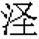
阳人，早年留学英美，曾任清华大学国学研究系主任，时任东南大学教授。作者在《二心集·上海文艺之一瞥》中说：“那时吴宓先生就曾经发表过文章，说是真不懂为什么有些人竟喜欢描写下流社会。”[22] 孙传芳军队的主力于1926年冬在江西南昌、九江一带为国民革命军击溃。
[23] 本篇最初印入《国际劳动问题》一书，原题为《〈国际劳动问题〉小引》。
[24] 台湾在1894年中日甲午战争后被日本侵占，1945年抗日战争胜利后光复。文中说的张我权，应为张我军（1902—1955），台北板桥人。当时是北京师范大学国文系学生。曾与台籍同学创办《少年台湾》杂志，写有不少宣传新文化和抨击台湾的文章和诗歌、小说。鲁迅1926年8月11日日记载：“张我军来并赠台湾《民报》四本。”
[25] 张秀哲 又名月澄，台湾省人。当时在广州岭南大学肄业，曾作长文《一个台湾人告中国同胞书》，收入杨成志编的《毋忘台湾》一书。《劳动问题》，原名《国际劳动问题》，日本浅利顺次郎著。张秀哲的译本于1927年由广州国际社会问题研究社出版，署张月澄译。
[26] 本篇最初发表于1927年8月13日《语丝》周刊第一四四期。
[27] 作者于1927年2月18日赴香港讲演，20日回广州。文中说的“一月”应为二月。
[28] 辰江的通信 载《语丝》第一三七期（1927年6月26日），题为《谈皇仁书院》。他曾亲听过作者在香港的讲演，在信的末段说：“前月鲁迅先生由厦大到中大，有某团体请他到青年会演说。……两天的演词都是些对于旧文学一种革新的说话，原是很普通的（请鲁迅先生原恕我这样说法）。但香港政府听闻他到来演说，便连忙请某团体的人去问话，问为什么请鲁迅先生来演讲，有什么用意。”
[29] 作者在香港青年会共讲演两次，一次在2月18日晚，讲题为《无声的中国》；一次在2月19日，讲题为《老调子已经唱完》。两篇讲稿后来分别收在《三闲集》和《集外集拾遗》中。
[30] 《循环日报》 香港出版的中文报纸，1874年1月由王韬创办，约于1947年停刊。它辟有《循环世界》等副刊。
[31] “藩司”“臬司” 明清两代称掌管一省财政民政的布政使为藩司，俗称藩台。称掌管一省狱讼的按察使为臬司，俗称臬台。
[32] 颜之推（531—591） 字介，琅琊临沂（今山东临沂）人，北齐文学家。在南朝梁曾任散骑侍郎，后入鲜卑族当政的北齐，任中书舍人、黄门侍郎等职。他关于学鲜卑语、弹琵琶的话，见所著《颜氏家训·教子》：“齐朝有一士大夫，尝谓吾曰：‘我有一儿，年已十七，颇晓书疏，教其鲜卑语及弹琵琶，稍欲通解，以此伏事公卿，无不宠爱，亦要事也。’吾时俯而不答。异哉，此人之教子也！若由此业，自致卿相，亦不愿汝曹为之。”按这是颜之推记述北齐“一士大夫”的话，并不是他自己的意见。鲁迅后来在《〈扑空〉正误》（收入《准风月谈》）一文中作过说明。
[33] 和尚被焚的故事，见宋代李心传《建炎以来系年要录》卷十八：建炎二年十二月，“自金人入中原，凡官汉地者，皆置通事，高下轻重，舞文纳贿，人甚苦之。有僧讼富民，逋其钱数万缗，而通事受贿，诡言天久不雨，此僧欲焚身动天。燕京留守尼楚哈许之。僧呼号，不能自明，竟以焚死。”又宋代洪皓《松漠纪闻》有金国“银珠哥大王”一则，记燕京一个富僧收债的事，内容与此相似。通事，当时对口译人员的称呼。
[34] “学者” 指顾颉刚等。顾颉刚，参看本卷第471页注〔10〕。顾当时要到中山大学任教，4月中到校。据鲁迅1927年3月29日日记，作者当日自中山大学“移居白云路白云楼二十六号二楼”。
[35] 《工商报》 即《工商日报》，香港报纸，创刊于1925年7月。
[36] “清党” 1924年1月，孙中山在中国共产党的帮助下，在广州召开国民党第一次全国代表大会，确定“联俄、联共、扶助农工”的三大政策，改组国民党，承认共产党员以个人资格参加该党，形成了国共合作的反帝反封建的革命统一战线。但到1927年春季北伐军进展至长江下游，蒋介石于4月12日在上海发动反共政变，并公布“清党”决议案，大肆杀戮共产党员和国民党内拥护孙中山三大政策的左派分子。国民党当局称之为“清党运动”。
[37] 《晨报副刊》 参看本卷第215页注〔5〕。鲁迅经常为《晨报副刊》写稿，但并非“特约撰述员”。
[38] “到了汉口” 在蒋介石发动政变之初，以汪精卫为主席的国民政府尚在武汉，还没有正式决定“分共”，当时的武汉还是国共合作的国民政府的所在地。1927年7月15日汪精卫公开反共，与蒋介石集团合流。
[39] “枪终路寝” 即被枪杀于路上的意思，由成语“寿终正寝”改变而来。
[40] 陈大悲（1887—1944） 浙江杭县（今余杭）人，剧作家。1923年8月，《晨报副刊》连续刊载他翻译的英国高尔斯华绥的剧本《忠友》；9月17日陈西滢在《晨报副刊》发表《高斯倭绥之幸运与厄运——读陈大悲先生所译的〈忠友〉》一文，指责他译文中的错误。徐丹甫在《北京文艺界之分门别户》中说鲁迅因此事停止了向《晨报副刊》投稿，意思是说鲁迅反对《晨报副刊》发表陈西滢的文字。
[42] 至纫公谊 旧时公函中习用的客套语。意思是十分感佩（对方）热心公事的厚意。纫，感佩。
[43] 《汉风杂志》 时甡编辑，1907年（清光绪三十三年）2月创刊于日本东京。第一号封面印有集南朝梁萧统《文选》句：“摅怀旧之蓄念，发思古之幽情。光祖宗之玄灵，振大汉之天声。”前二句见该书卷一班固《西都赋》，后二句见卷五十六班固《封燕然山铭》。
[44] 《湖北学生界》 清末留学日本的湖北学生主办的一种月刊，1903年（清光绪二十九年）1月创刊于东京，第四期起改名《汉声》。同年闰五月另编“闰月增刊”一册，名为《旧学》，扉页背面也印有上述《文选》句。
[45] 从予 即樊仲云（1901—1990），字德一，笔名从予，浙江嵊县人，当时是商务印书馆的编辑。抗日战争时期任汪伪政府教育部政务次长等职。这里所引的文字见于他在《一般》杂志第三号（1926年11月）发表的评论《彷徨》的短文。《一般》，是上海立达学会主办的一种月刊，1926年9月创刊，1929年12月停刊，开明书店发行。
[46] 这个广告连续登载于1927年7月5日至20日香港《循环日报》。
[47] 本篇记录稿经作者校阅后最初发表于1927年8月18、19、22日广州《民国日报》副刊《现代青年》第一七九、一八〇、一八一期；后重刊于1927年9月16日《北新》周刊第四十七、四十八期合刊。
[48] 知用中学 1924年9月由广州知用学社创办的一所学校。知用学社是共产党人毕磊等组织的社团。
[49] 博物 旧时中学的一门课程，包括动物、植物、矿物等学科的内容。
[50] 这里说的开一大篇书目，指胡适的《一个最低限度的国学书目》、梁启超的《国学入门书要目及其读法》和吴宓的《西洋文学入门必读书目》等。这些书目都开列于1923年。
[51] 张之洞的《书目答问》 参看本卷第208页注〔26〕。
[52] 本间久雄（1886—1981） 日本文艺理论家。曾任早稻田大学教授。《新文学概论》有章锡琛中译本，1925年8月商务印书馆出版。
[53] 厨川白村（1880—1923） 日本文艺评论家。曾留学美国，归国后任京都帝国大学教授。《苦闷的象征》是他的文艺论文集。参看本卷第20页注〔7〕。
[54] 《苏俄的文艺论战》 任国桢辑译，内收1923年至1924年间苏联瓦浪斯基（А.К.Воронский）等人关于文艺问题的论文四篇。参看本卷第365页注〔9〕。
[55] 这个比喻见于印度何种书籍，未详。1888年（清光绪十四年）张赤山译的伊索寓言《海国妙喻·丧驴》中有同样内容的故事。
[56] 进研究室 “五四”以后，胡适提出青年学生应该“进研究室”、“整理国故”的主张。鲁迅认为这是诱导青年脱离现实斗争，曾多次撰文予以批驳，参看《坟·未有天才之前》等文。
[57] 培那特萧 即萧伯纳。参看本卷第103页注〔6〕。他关于“读书者”、“思索者”、“观察者”的议论见于何种著作，未详。（按英国学者嘉勒尔说过类似的话，见鲁迅译日本鹤见祐辅《思想·山水·人物》中的《说旅行》。）
[58] 勖本华尔 即叔本华。“脑子里给别人跑马”，可能指他的《读书和书籍》中的这段话：“我们读着的时候，别人却替我们想。我们不过反复了这人的心的过程。……读书时，我们的脑已非自己的活动地。这是别人的思想的战场了。”
[59] 本篇最初发表于1927年10月1日《语丝》周刊第一五一期。
[60] 《鲁迅在广东》 钟敬文编辑，内收鲁迅到广州后别人所作关于鲁迅的文字十二篇和鲁迅的讲演记录稿三篇、杂文一篇。1927年7月上海北新书局出版。按钟敬文（1903—2002），广东海丰人，当时是广州岭南大学文学系职员。
[61] “革命后方” 1926年7月国民革命军自广东出师北伐，因而当时广东有“革命后方”之称。
[62] 指朱家骅（1893—1963），字骝先，浙江吴兴人，曾留学德国，当时任中山大学委员会委员（实际主持校务）。1927年1月25日在中大学生欢迎鲁迅的大会上，他曾发表演说。朱后任国民党政府教育部长、国民党中央组织部长等职。
[63] 秋瑾（1875—1907） 字璿卿，号竞雄，别署鉴湖女侠，浙江绍兴人。1904年留学日本，先后加入光复会、同盟会。1906年春回国。1907年在绍兴主持大通师范学堂，组织光复军，准备与徐锡麟在浙、皖同时起义。徐锡麟起事失败后，她于7月14日被清政府逮捕，次日晨遇害。
[64] 郭沫若 参看本卷第256页注〔42〕。《橄榄》是他的小说散文集，1926年9月创造社出版。
[65] “纸糊的假冠” 高长虹嘲骂作者的话。参看本卷第411页注〔6〕。
[66] 指香港《循环日报》。引文见1927年6月10日、11日该报副刊《循环世界》所载徐丹甫《北京文艺界之分门别户》一文。
[67] 《学灯》 上海《时事新报》的副刊。1918年3月4日创刊，1947年2月24日停刊。《时事新报》当时是研究系的报纸。
[68] 指顾颉刚（1893—1980），字铭坚，江苏苏州人，历史学家。曾任北京大学、厦门大学教授，时任中山大学教授。1927年7月，顾在出差杭州时从汉口《中央日报》副刊看到作者致孙伏园信，其中有“在厦门那么反对民党……的顾颉刚”等语，即致函作者，说“诚恐此中是非，非笔墨口舌所可明了，拟于九月中旬回粤后提起诉讼，听候法律解决”，并要作者“暂勿离粤，以俟开审”。参看《三闲集·辞顾颉刚教授令“候审”》。
[69] “缧绁之忧” 语出《论语·公冶长》：“子谓‘公冶长，可妻也；虽在缧
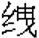
之中，非其罪也。’以其子妻之。”公冶长，孔子弟子。缧，亦作缧绁，古时系罪人的黑色绳索。[70] CP 英文Communist Party的缩写，即共产党；CY，英文Communist Youth的缩写，即共产主义青年团。
[71] 指国民党的青年组织。如L.Y.，即所谓“左派青年团”；T.Y.，即“三民主义同志社”。
[72] 指所谓“士的派”（又称“树的党”），国民党右派“孙文主义学会”所操纵的一个广州学生团体。按“士的”是英语Stick（手杖、棍子）的音译。
[73] 土耳其鸡 即吐绶鸡，俗称火鸡。头部有红色肉冠，喉下垂红色肉瓣；公鸡常扩翼展尾如扇状，同时肉冠及肉瓣便由红色变为蓝白色。
[74] 《民报》 1925年7月创刊于北京，不久即被奉系军阀张作霖查封。关于《民报》的广告，参看本卷第253页注〔25〕。陈西滢于1926年1月30日《晨报副刊》发表的《致志摩》中挖苦作者说：“不是有一次一个报馆访员称我们为‘文士’吗？鲁迅先生为了那名字几乎笑掉了牙。可是后来某报天天鼓吹他是‘思想界的权威者’，他倒又不笑了。”
[75] 《闲话》 陈西滢发表在《现代评论》“闲话”专栏文章的结集，收文七十八篇，名为《西滢闲话》，1928年3月上海新月书店出版。
[76] 本篇最初发表于1927年10月1日上海《北新》周刊第四十九、五十期合刊。
[77] 有恒 时有恒（1905—1982），江苏徐州人，曾参加北伐，当时流落上海。他在1927年8月16日《北新》周刊第四十三、四十四期合刊上发表一篇题为《这时节》的杂感，其中有涉及作者的话：“久不见鲁迅先生等的对盲目的思想行为下攻击的文字了”，“在现在的国民革命正沸腾的时候，我们把鲁迅先生的一切创作……读读，当能给我们以新路的认识”，“我们恳切地祈望鲁迅先生出马。……因为救救孩子要紧呀。”鲁迅因作本文回答。
[78] 《北新》 综合性杂志，上海北新书局发行，1926年8月创刊。初为周刊，1927年11月第二卷第一期起改为半月刊，出至1930年12月第四卷第二十四期停刊。
[79] “暴殄天物” 语出《尚书·武成》：“今商王受（纣）无道，暴殄天物，害虐蒸民。”据唐代孔颖达疏，“天物”是指不包含人在内的“天下百物，鸟兽草木”。
[80] 关于吃人的筵宴的议论，参看《坟·灯下漫笔》第二节。
[81] “醉虾” 江浙等地把活虾放进醋、酒、酱油等拌成的配料中生吃的一种菜。
[83] “研究系” 参看本卷第90页注〔7〕。在他们主办的《时事新报》副刊《学灯》上，曾刊载《北京文艺界之分别门户》一文，内称“与‘现代派’抗衡者是‘语丝派’”，又说“语丝派”以鲁迅“为主”。“现代派”，即现代评论派，他们曾称鲁迅为“语丝派首领”。参看本书《革“首领”》。
[84] “投诸四裔” 流放到四方边远的地方去。语出《左传》文公十八年：“舜臣尧，宾于四门；流四凶族：浑敦、穷奇、梼杌、饕餮，投诸四裔，以御螭魅。”
[85] 指顾颉刚，1926年时任厦门大学教授。作者1926年9月30日致许广平信中说：“此地所请的教授，我和兼士之外，还有朱山根（按指顾颉刚）。这人是陈源之流，我是早知道的。……他已在开始排斥我，说我是‘名士派’，可笑。”（见《两地书·四十八》）
[86] 《春秋》笔法 《春秋》是春秋时期鲁国的史书，相传为孔子所修。过去的经学家认为它每用一字，都含有“褒”、“贬”的“微言大义”，称之为“春秋笔法”。
[87] 这里指陈万里（田千顷）、黄坚（白果）等散布的流言。参看本卷第421页注〔7〕。
[88] “身心交病” 这是高长虹嘲骂鲁迅的话。参看本卷第411页注〔6〕。
[89] 独秀 陈独秀（1879—1942），字仲甫，安徽怀宁人，北京大学教授，《新青年》杂志的创办人，“五四”时期提倡新文化运动的主要人物。1921年中国共产党成立后，任党的总书记。第一次国内革命战争后期，推行右倾投降主义路线，使革命遭到失败。之后，他成了取消主义者，接受托洛茨基派的观点，成立反党小组织，于1929年11月被开除出党。
[90] 唐有壬（1893—1935） 湖南浏阳人。当时是《现代评论》的经常撰稿人，后任国民党政府外交部次长。1926年5月12日上海小报《晶报》载有《现代评论被收买？》的一则新闻，其中曾引用《语丝》上揭发《现代评论》收受段祺瑞津贴的文字；接着唐有壬便于同月18日致函《晶报》强作辩解，并造谣说：“《现代评论》被收买的消息，起源于俄国莫斯科。在去年春间，我有个朋友由莫斯科写信来告诉我，说此间的中国人盛传《现代评论》是段祺瑞办的，由章士钊经手每月津贴三千块钱。当时我们听了，以为这不过是共产党造谣的惯技，不足为奇。”《晶报》在发表这封信时，标题是《现代评论主角唐有壬致本报书》。
[91] “抚哭叛徒的吊客” 参看《华盖集·这个与那个》第三节《最先与最后》。这里说的“叛徒”，指旧制度的叛逆者。
[92] 吴稚晖 参看本卷第229页注〔4〕。他曾自称为无政府主义者，在1926年2月给邵飘萍的一封信中说过这样的话：“赤化就是所谓共产，这实在是三百年以后的事；犹之乎还有比他更进步的，叫做无政府，他更是三千年以后的事。”1927年3月底4月初他承蒋介石意旨，向国民党中央监察委员会提出《纠察共产党员谋叛党国案》、《请查办共产党分子谋叛案》，叫嚣“打倒”“严办”共产党人和革命群众。
[93] “淡淡的血痕中” 1926年3月18日北洋军阀段祺瑞政府枪杀请愿的爱国学生和市民后，作者曾作散文诗《淡淡的血痕中》（收入《野草》），以悼念死者。
[94] 本篇最初发表于1927年10月1日《语丝》周刊第一五一期。
[95] 新月社 以留学英美的知识分子为核心的文学和政治性团体，1923年成立于北京。取名于印度诗人泰戈尔的《新月集》。主要成员有胡适、徐志摩、陈西滢、闻一多、梁实秋、罗隆基等。该社于1926年夏天借北京《晨报副刊》版面出过《诗刊》（周刊）十一期，提倡新格律诗创作。1927年该社成员多数南下，在上海创办新月书店，于1928年3月发刊综合性的《新月》月刊，张扬“英国式”民主政治。
[96] “公理”和“正义”，是现代评论派陈西滢等人在支持章士钊、杨荫榆压迫女师大学生时经常使用的字眼。1925年11月底，当女师大学生斗争胜利，回校复课时，陈西滢、王世杰等人又组织所谓“教育界公理维持会”，反对女师大复校，支持章士钊另立女子大学。作者在《华盖集续编·新的蔷薇》中曾说：“公理是只有一个的。然而听说这早被他们拿去了，所以我已经一无所有。”
[97] 本篇最初发表于1927年10月8日《语丝》周刊第一五二期。
[98] “世故的老人” 高长虹嘲骂作者的话，参看本卷第401页注〔3〕。
[99] 《教育漫谈》 原题《教育漫语》，徐祖正作，载于1927年8月13日、20日《语丝》第一四四、一四五两期。1927年8月，把持北洋政府的奉系军阀张作霖，为了加强对教育界的控制，强行把北京九所国立学校合并为“京师大学”，引起教育界的不满。徐祖正的文章是对这件事发表的议论。徐祖正（1895—1978），江苏昆山人，时任北京大学教授，与鲁迅多有交往。
[100] “不可与言而与之言” 语出《论语·卫灵公》：“不可与言而与之言，失言。”是孔子的话。“知其不可为而为之”，语出《论语·宪问》，是孔子同时的守门人评论他的话。
[101] 一打以上总长 自1912年2月至1926年7月鲁迅任职教育部期间，先后任教育总长或代总长的计有二十七人：蔡元培、范源濂、刘冠雄（以海军总长兼）、陈振先（以农林总长兼）、董鸿祎（代）、汪大燮、严修、汤化龙、张一麐、张国淦、孙洪伊、傅增湘、袁希涛 （代）、傅嶽芬、齐耀珊（以农商总长兼）、周自齐、黄炎培、汤尔和、彭允彝、黄郛、易培基、王九龄、章士钊（以司法总长兼）、马君武、胡仁源、王宠惠、任可澄。
[102] 再作冯妇 《孟子·尽心》：“晋人有冯妇者，善搏虎，卒为善士。则之野，有众逐虎，虎负嵎，莫之敢撄；望见冯妇，趋而迎之。冯妇攘臂下车，众皆悦之；其为士者笑之。”后人称重操旧业为“再作冯妇”。
[103] 本篇最初发表于1927年10月8日《语丝》周刊第一五二期。
[104] 《顺天时报》 日本人在北京所办的中文报纸。参看本卷第104页注〔9〕。1927年8月7日该报刊载《女附中拒绝剪发女生入校》新闻一则说：“西城辟才胡同女附中主任欧阳晓澜女士自长校后，不惟对于该校生功课认真督责指导，即该校学风，由女士之严厉整顿，亦日臻良善，近闻该校此次招考新生，凡剪发之女学生前往报名者，概予拒绝与考，因之一般剪发女生多有望洋兴叹之概云。”
[105] 指清朝统治者强迫汉人剃发垂辫一事。1644年（明崇祯十七年、清顺治元年）清兵入关并定都北京后，即下令剃发垂辫，因受到各地汉人反对及局势未定而中止。次年5月攻占南京后，又下了严厉的剃发令，限于布告之后十日，“尽使薙（剃）发，遵依者为我国之民，迟疑者同逆命之寇”，如“已定地方之人民，仍存明制，不随本朝之制度者，杀无赦！”此事曾引起各地汉人的广泛反抗，有许多人被杀。
[106] 作者在清代末年留学日本时，即将辫子剪掉，据许寿裳《亡友鲁迅印象记》所记，时间在1902年（清光绪二十八年）秋冬之际。他在1909年（宣统元年）归国后曾因没有辫子而吃过许多苦。参看《且介亭杂文·病后杂谈之余》和《且介亭杂文末编·因太炎先生而想起的二三事》。
[107] 袁世凯 参看本卷第115页注〔11〕。1912年3月5日南京临时政府曾通令“人民一律剪辫”；同年11月初，袁世凯在北京发布的一项令文中，也有“剪发为民国政令所关，政府岂能漠视”等话。
[108] “天乳运动” 1927年7月7日，国民党广东省政府委员会第三十三次会议，通过代理民政厅长朱家骅提议的禁止女子束胸案，规定“限三个月内所有全省女子，一律禁止束胸，……倘逾限仍有束胸，一经查确，即处以五十元以上之罚金，如犯者年在二十岁以下，则罚其家长。”（见1927年7月8日广州《国民新闻》）7月21日明令施行，一些报纸也大肆鼓吹，称之为“天乳运动”。
[109] 樊增祥（1846—1931） 字嘉父，号樊山，湖北恩施人，清光绪进士，曾任江苏布政使。他喜作诗词骈文，曾写过很多“艳体诗”，在用典和对仗上卖弄技巧；做官时所作的判牍，也多轻浮语句。下文的“鸡头肉”，是芡实（一种水生植物的果实）的别名。宋代刘斧《青琐高议》前集卷六《骊山记》载：“一日，贵妃浴出，对镜匀面，裙腰褪，微露一乳，……（帝）指妃乳言曰：‘软温新剥鸡头肉。’”
[110] “杞天之虑” 这是杨荫榆掉弄成语“杞人忧天”而成的文言用语，参看本卷第115页注〔5〕。
[111] “不齿于四民之列” 民国以前，封建统治者对于所谓“惰民”、“乐籍”以及戏曲演员、官署差役等都视为贱民，将他们列于“四民”（士、农、工、商）之外，禁止参加科举考试。
[112] 本篇最初发表于1927年10月15日《语丝》周刊第一五三期。
[113] 华盖罩命 即“交华盖运”，参看《华盖集·题记》。
[115] “权威” 《民报》广告中称作者的话，参看本卷第253页注〔25〕。“不准做‘权威’，只准做‘前驱’”，是针对高长虹的话而说的。高长虹在《1925北京出版界形势指掌图》中曾说：“要权威者何用？为鲁迅计，则拥此空名，无裨实际”；而在“狂飙社广告”（见1926年8月《新女性》月刊第一卷第八号）中又说他们曾经“与思想界先驱者鲁迅……合办《莽原》。”
[117] “青年叛徒的领袖” 1925年9月4日《莽原》周刊第二十期载有霉江致作者的信，其中有“青年叛徒领导者”的话。陈西滢在1926年1月30日《晨报副刊》发表的《致志摩》中讥讽作者说：“这像‘青年叛徒的领袖’吗？”“这才是中国‘青年叛徒的领袖’，中国青年叛徒也可想而知了。”
[118] 陈西滢关于“发热”的话，参看本卷第251页注〔15〕。
[119] 陈西滢在《致志摩》中曾说：“志摩，……我常常觉得我们现在走的是一条狭窄险阻的小路，左面是一个广漠无际的泥潭，右面也是一片广漠无际的浮砂，前面是遥遥茫茫荫在薄雾的里面的目的地。”
[120] 本篇最初发表于1927年10月8日《语丝》周刊第一五二期。
[121] “中国元气太损” 1927年夏天，上海公共租界的英国当局，嗾使一部分买办洋奴用所谓“上海保安会”的名义，散发维护帝国主义利益的传单与图画，有一张图画上画一个学生高高站着大叫“打倒帝国主义！”他下面的一群听众都表示反对，其中有一个工人张嘴喊着：“中国元气太损，再用不着破坏了！”
[122] 高长虹在《1925北京出版界形势指掌图》中有这样的话：“鲁迅去年不过四十五岁，……如自谓老人，是精神的堕落！”下文“身心交病”、“新时代的青年”，也出自高长虹这篇文章。
[123] 清代康熙、雍正、乾隆等朝，曾大兴文字狱，以消除汉族的反清思想。如康熙二年（1663）庄廷
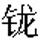
《明书》之狱；康熙五十年（1711）戴名世《南山集》之狱；雍正十年（1732）吕留良、曾静之狱；乾隆二十年（1755）胡中藻《坚磨生诗钞》之狱；乾隆四十三年（1778）徐述夔《一柱楼诗》之狱等，是其中最著名的几次大狱。[124] 《茅亭客话》 宋代黄休复著；《琳琅秘室丛书》，清代胡珽校刊。参看《华盖集·这个与那个》第一节及其注〔6〕、〔7〕。
[125] 《鸡肋编》 参看本卷第354页注〔8〕。清代胡珽《琳琅秘室丛书》中收有此书，系以影元钞本校文澜阁本；这里是指夏敬观据琳琅秘室本校印的本子，1920年7月出版。文澜阁，收藏清代乾隆年间所纂修的“四库全书”的七阁之一，在杭州西湖孤山附近，建于乾隆四十九年（1784）。
[126] “循规蹈矩”之道 1927年7月上海公共租界“工部局”下令增加房捐，受到市民的反抗。租界当局御用的“上海保安会”便散发题为《循规蹈矩》的传单，说“循规蹈矩”“是千古治家治国的至理名言；否则，处处演出越轨的举动，就要家不家，国不国了。”威胁民众不得为此事“罢工辍业”。
[127] 罗素（B.Russell，1872—1970） 英国哲学家。1920年10月来我国讲学，曾至西湖游览。他“称赞”杭州轿夫“常是笑嘻嘻”的话，见所著《中国问题》一书，其中说几个中国轿夫在休息时，“谈着笑着，好像一点忧虑都没有似的。”
[128] 江霞公太史 即江孔殷，字少泉，号霞公，广东南海人。清末翰林，故称太史。他当时是广东军阀李福林的幕僚，经常在广州、港澳等地以遗老姿态搞复古活动。
[129] “嵌字格” 过去做旧诗或对联的人，将几个特定的字（如人名地名或成语），依次分别用在各句中相同的位置上，叫做“嵌字格”。
[130] 饶汉祥（1876—1927） 字宓僧，湖北广济人。清末举人，民国初年曾任黎元洪的秘书长。他作的通电宣言，都是骈文滥调。他于1927年7月去世，同月29日《顺天时报》日本记者著文哀悼，其中有这样的句子：“饶之文章为今日一般白话文学家所蔑视，实则词章本属国粹，饶已运化入神，何物狂徒，鄙弃国粹，有识者于饶之死不能不叹天之降眚于斯文也。”
[131] 裁厘加税 厘即厘金，是起于清代咸丰年间的一种地方货物通过税。1925年10月段祺瑞政府邀请英、美、日等国，在北京召开“关税特别会议”，会上曾讨论中国裁撤厘金和增加进口税等问题。各国代表大都以裁撤厘金为承认中国关税自主的条件，反对中国在裁厘以前提高进口货物的税率。他们所以在会议上提出裁厘，意在抵制中国政府增加关税的要求，因为他们明知当时的中国军阀割据，中国政府根本不可能裁撤厘金。
[132] 本篇最初发表于1927年10月22日《语丝》周刊第一五四期。
[133] 《语丝》第一四七期（1927年9月3日）《随感录》二十八是岂明（周作人）所作的《光荣》。内容是说《语丝》第一四一期登载了一篇《吴公如何》，指斥吴稚晖提议“清党”，残杀异己，因而从那一期以后在南方便都被扣留的事。
[134] 《新生》 文艺周刊，北京大学新生社编辑发行，1926年12月创刊，1927年7月出至第二十一期停刊。
[135] 《沉钟》 文艺刊物，沉钟社编辑。1925年10月创刊于北京，初为周刊，仅出十期；次年8月改为半月刊，中经休刊复刊，1934年2月出至三十四期停刊。主要作者有林如稷、冯至、陈炜谟、陈翔鹤、杨晦等。这里是指半月刊。
[136] 《斯文》 月刊，日本出版的汉学杂志，佐久节编，1919年1月创刊于东京。该刊自1927年1月第九编第一号起连载《西游记杂剧》（非传奇）。《西游记杂剧》，现存本题元吴昌龄撰，实为元末明初杨讷（字景贤）所作，共六卷。我国佚亡已久，1926年日本宫内省图书寮发见明刊杨东来评本。
[137] 《君山》 韦丛芜作的长诗，1927年3月北京未名社出版。
[138] 黎锦明（1905—1999） 湖南湘潭人，小说家。《烈火》是他的短篇小说集（书名无“集”字），1926年上海开明书店出版。
[139] 这是广州的所谓“革命文学社”出版的反共刊物《这样做》（旬刊）第三、四期合刊（1927年4月30日）的封面画，以后各期均沿用。
[140] 方传宗关于毛边装订的通信，载《语丝》第一二九期（1927年4月30日）。其中说，毛边装订在作者是作品“内容浅薄的掩丑”，对于读者，则“两百多页的书要受十多分钟裁剖的损失”，所以他反对毛边装订。从通信中可知他当时是福建一个学校的图书馆馆员。
[141] 李老板 指北新书局主持者李小峰。参看本卷第324页注〔7〕。
[142] 《这样做》第七、八期合刊（1927年6月20日）载有署名侠子的《东风》一文，作者在文末“附白”中说：“在这革命火焰高燃的当中，我们所渴望着的文学当然是革命的文学，平民的文学，拙作《东风》载在这革命的刊物里，本来是不对的……希望读者指正和原谅。”
[143] 教育部禁止白话 1927年9月，北洋政府教育部发布禁止白话文令，说使用白话文是“坐令俚鄙流传，斯文将丧”，下令“所有国文一课，无论编纂何项讲义及课本，均不准再用白话文体，以昭划一而重国学”。
[144] 郁达夫的受攻击的文章，指他在《洪水》半月刊第三卷第二十九期（1927年4月8日）发表的《在方向转换的途中》。该文主旨在攻击他认为“足以破坏我们目下革命运动（按指第一次国内革命战争）的最大危险”的“封建时代的英雄主义”。文中有这样一段：“处在目下的这一个世界潮流里，我们要知道，光凭一两个英雄，来指使民众，利用民众，是万万办不到的事情。真正识时务的革命领导者，应该一步不离开民众，以民众的利害为利害，以民众的敌人为敌人，万事要听民众的指挥，要服从民众的命令才行。若有一二位英雄，以为这是迂阔之谈，那么你们且看着，且看你们个人独裁的高压政策，能够持续几何时。”《这样做》第七、八期合刊上发表孔圣裔的《郁达夫先生休矣！》一文，攻击说：“我意料不到，万万意料不到郁达夫先生的论调，竟是中国共产党攻击我们劳苦功高的蒋介石同志的论调，什么英雄主义，个人独裁的高压政策”；“郁达夫先生！你现在是做了共产党的工具，还是想跑去武汉方面升官发财，特使来托托共产党的大脚？”孔圣裔，广东五华人。1927年2月在《广州民国日报》刊登《退出共产党启事》，公开参加国民党；同年3月创办《这样做》旬刊。
[145] 《洪水》 创造社刊物之一，1924年8月创刊于上海。初为周刊，仅出一期，1925年9月复刊，改为半月刊，1927年12月出至三十六期停刊。
[146] 袁世凯于1916年1月1日改元为“洪宪”，自称“中华帝国”皇帝，至3月22日取消帝制，共八十一天。关于他看特印的报纸一事，据戈公振《中国报学史》引《虎庵杂记》：“项城（按指袁世凯）在京取阅上海各报，皆由梁士诒、袁乃宽辈先行过目，凡载有反对帝制文电，皆易以拥戴字样，重制一版，每日如是，然后始进呈。”
[147] 蔡松坡（1882—1916） 名锷，字松坡，湖南邵阳人。辛亥革命时在昆明起义，任云南都督。1915年12月在云南组织“护国军”讨伐袁世凯。后病故于日本。
[148] 龙驭上宾于天 封建时代称皇帝的死为“龙驭上宾于天”（或龙驭宾天），即乘龙仙去的意思。《史记·封禅书》：“黄帝采首山铜，铸鼎于荆山下。鼎既成，有龙垂胡髯下迎黄帝。黄帝上骑，群臣后宫从上者七十余人，龙乃上去。”
[149] “清道” 封建时代，帝王和官员出入，先命清扫道路和禁止行人，叫做“清道”。
[150] 本篇最初发表于1927年10月22日《语丝》周刊第一五四期。
[152] 段执政 指段祺瑞。参看本卷第128页注〔4〕。下文的“开枪打败了请愿的学生”，指1926年段祺瑞下令卫兵屠杀爱国学生的三一八惨案。
[153] 枪炮战胜了投壶 指北伐时的国民革命军战胜了军阀孙传芳。参看本卷第382页注〔4〕。
[154] 《现代评论》开办时曾通过章士钊接受段祺瑞的一千元津贴。《猛进》、《语丝》曾揭露过这件事。陈西滢在《现代评论》第三卷第六十五期（1926年3月6日）的《闲话》中强作辩解，并影射攻击鲁迅。参看本卷第280页注〔4〕。
[155] 本篇最初发表于1927年10月22日《语丝》周刊第一五四期。
[156] 清党委员会 蒋介石国民党为镇压共产党人和国民党内拥护孙中山三大政策的左派分子而设立的机构。1927年5月5日，国民党中央执行委员会常务委员会及各部长联席会议决定，指派邓泽如等七人组织中央清党委员会。5月17日，该会在南京正式成立，各省也先后组成它的下属机构。
[157] 本篇最初发表于1927年10月22日《语丝》周刊第一五四期。
“意表之外”，是引用复古派文人林纾文章中不通的用语。
[158] “兰谱” 旧时朋友相契，结为兄弟，互换谱帖以为凭证，称为金兰谱，省称兰谱，取《周易·系辞》“二人同心，其利断金；同心之言，其臭如兰”的意思。
[159] “相视而笑”二句，见《庄子·大宗师》：子祀、子舆等四人“相视而笑，莫逆于心，遂相与为友。”彼此同心，毫无拂逆的意思。
[160] 耶稣（约前4—30） 基督教创始人。据《新约全书》说，他在犹太各地传教，为犹太教当权者所仇视，后被捕送交罗马帝国驻犹太总督彼拉多，钉死在十字架上。
[161] 本篇最初发表于1927年10月22日《语丝》周刊第一五四期，原题《“新时代”的避债法》。
[162] “世故”及下文若干词句，都是引用高长虹的话。高长虹，参看本卷第401页注〔3〕。他在1924年12月认识鲁迅后，曾得到鲁迅很多指导和帮助。1926年下半年起，他却对鲁迅进行恣意的诬蔑和攻击。他在《狂飙》周刊第五期（1926年11月）发表的《1925北京出版界形势指掌图》中，曾嘲骂鲁迅为“世故老人”。在第六期（1926年11月）《给——》一诗中自比太阳：“如其我是太阳时，我将嫉妒那夜里的星星。”在第九期（1926年12月）《介绍中华第一诗人》内则说：“在恋爱上我虽然像嫉妒过人，然而其实是我倒让步过人。”第十期（1926年12月）《时代的命运》中又有“我对于鲁迅先生曾献过最大的让步，不只是思想上，而且是生活上”等语。在同篇中又说他和鲁迅“曾经过一个思想上的战斗时期”，他所用的“战略”是“同情”。在《指掌图》一文中，又自称与鲁迅“会面不只百次”。第十四期（1927年1月）《我走出了化石的世界》中又咒骂：“鲁迅不特身心交病，且将身败名裂矣！”等等。所以本文中有“太阳”、“爱人”、“同情”、“来一百回”等语。此外，“帮忙”、“新时代的新青年”等，都是高长虹文中常用的词语。
[163] 本篇记录稿最初发表于1927年8月11、12、13、15、16、17日广州《民国日报》副刊《现代青年》第一七三至一七八期；改定稿发表于1927年11月16日《北新》半月刊第二卷第二号。
[164] 广州夏期学术演讲会 国民党政府广州市教育局主办，1927年7月18日在广州市立师范学校礼堂举行开幕式。当时的广州市长林云陔、教育局长刘懋初等均在会上作反共演说。他们打着“学术”的旗号，也“邀请”学者演讲。作者这篇演讲是在7月23日、26日的会上所作的（题下注“九月间”有误）。作者后来说过：“在广州之谈魏晋事，盖实有慨而言。”（1928年12月30日致陈濬信）他在这次关于中国古典文学的演讲里，曲折地对国民党当局进行了揭露和讽刺。
[165] 黄巾 指东汉末年巨鹿人张角领导的农民起义军。汉灵帝中平元年（184）起义，参加的人都以黄巾缠头为标志，称为“黄巾军”。他们提出“苍天已死，黄天当立”的口号，攻占城邑，焚烧官府，旬日之间，全国响应，给东汉政权以沉重的打击。后来在官军和地主武装的镇压下失败。
[166] 董卓（？—192） 字仲颖，陇西临洮（今甘肃岷县）人。东汉末灵帝时为并州牧，灵帝死后，外戚首领大将军何进为了对抗宦官，召他率兵入朝相助，他到洛阳后，即废少帝（刘辩），立献帝（刘协），自任丞相，专断朝政。献帝初平元年（190），山东河北等地军阀袁绍、韩馥等为了和董卓争权，联合起兵讨卓，他便劫持献帝迁都长安，自为太师。后为王允、吕布所杀。他在离洛阳时，焚烧宫殿府库民房，二百里内尽成墟土；又驱数百万人口入关，积尸盈途。在他被杀以后，他的部将李傕、郭汜等又攻破长安，焚掠屠杀，人民受害甚烈。
[167] 党锢 东汉末年，宦官擅权，政治黑暗，民生痛苦。一部分比较正直的官员与太学生互通声气，议论朝政，揭露宦官集团的罪恶。汉桓帝延熹九年（166），宦官诬告司隶校尉李膺、太仆杜密和太学生领袖郭泰、贾彪等人结党为乱，桓帝便捕李膺、范滂等下狱，株连二百余人。以后又于灵帝建宁二年（169），熹平元年（172），熹平五年（176）三次捕杀党人，更诏各州郡凡党人的门生、故吏、父子、兄弟有做官的，都免官禁锢。直到灵帝中平元年（184）黄巾起义，才下诏将他们赦免。这件事，史称“党锢之祸”。
[168] 曹操（155—220） 字孟德，沛国谯（今安徽亳县）人。二十岁举孝廉，汉献帝时官至丞相，封魏王。曹丕篡汉后追尊为武帝。他是政治家、军事家，又是诗人。他和其子曹丕、曹植，都喜欢延揽文士，奖励文学，为当时文坛的领袖人物。后人把他的诗文编为《魏武帝集》。
[169] 《三国志演义》 即长篇小说《三国演义》，元末明初罗贯中著。书中将曹操描写为“奸雄”。
[170] 严可均（1762—1843） 字景文，号铁桥，浙江乌程（今湖州）人。清嘉庆举人，曾任建德教谕。他自嘉庆十三年（1808）起，开始搜集唐以前的文章，历二十余年，成《全上古三代秦汉三国六朝文》，内收作者三千四百多人，分代编辑为十五集，总计七四六卷。稍后，他的同乡蒋壑为作编目一〇三卷，并以为原书题名不能概括全书，故将书名改为《全上古三代秦汉三国晋南北朝文》。原书于1894年（光绪二十年）由黄冈王毓藻刊于广州。
[171] 丁福保（1874—1952） 字仲祜，江苏无锡人。清末肄业于江阴南菁书院，曾任京师大学堂和译学馆教习。后习医，曾至日本考察医学，归国后在上海创办医学书局。他所辑的《全汉三国晋南北朝诗》，收作者七百余人，依时代分为十一集，总计五十四卷。1916年上海医学书局出版。
[172] 刘师培（1884—1919） 字申叔，江苏仪征人。1907年在日本加入同盟会，后成为清朝两江总督端方的幕僚。民国后与杨度、孙毓筠等人组织筹安会，助袁世凯实行帝制。他的著作很多，《中国中古文学史》是他在民国初年任北京大学教授时所编的讲义，后收入《刘申叔先生遗书》中。
[173] 《三国志·魏书·武帝纪》裴松之注引《魏武故事》，曹操于汉献帝建安十五年（210）下令“自明本志”，表白自己并无篡汉的意图，内有“设使国家无有孤，不知当几人称帝，几人称王！”的话。
[174] 《太平御览》卷四二五引谢承《后汉书》：“范丹姊病，往看之，姊设食；丹以姊婿不德，出门留二百钱，姊使人追索还之，丹不得已受之。闻里中刍藁童仆更相怒曰：‘言汝清高，岂范史云辈而云不盗我菜乎？’丹闻之，曰：‘吾之微志，乃在童竖之口，不可不勉。’遂投钱去。”按范丹（112—185），一作范冉，字史云，后汉陈留外黄（今河南杞县东北）人。
[175] 曹操曾于建安十五年（210）、二十二年（217）下求贤令，又于建安十九年（214）令有司取士毋废“偏短”，均强调以才能为用人的标准。《魏书·武帝纪》载建安十五年令说：“今天下尚未定，此特求贤之急时也。……若必廉士而后可用，则齐桓其何以霸世！今天下得无有被褐怀玉而钓于渭滨者乎？又得无盗嫂受金而未遇无知者乎？二三子其佐我明扬仄陋，唯才是举，吾得而用之。”又裴注引王沈《魏书》所载二十二年令说：“今天下得无有至德之人，放在民间？及果勇不顾，临敌力战，若文俗之吏，高才异质，或堪为将守；负汙辱之名，见笑之行，或不仁不孝，而有治国用兵之术：其各举所知，勿有所遗。”
[176] “郑康成行酒伏地气绝” 语出《三国志·魏书·袁绍传》裴注引《英雄记》载曹操《董卓歌》：“德行不亏缺，变故自难常。郑康成行酒伏地气绝，郭景图命尽于园桑。”按郑康成（127—200），名玄，字康成，北海高密（今山东高密）人，东汉经学家。曾聚徒讲学，建安中官拜大司农，寻卒。其生活时代较曹操约早二十余年。
[177] 曹操的遗令，散见于《三国志·魏书·武帝纪》及其他古书中，严可均缀合为一篇，收入《全三国文》卷三，其中有这样的话：“吾婢妾与伎人皆勤苦，使著铜雀台，善待之。……余香可分与诸夫人……诸舍中（按指诸妾）无所为，可学作履组卖也。吾历官所得绶（印绶），皆著藏中，吾余衣裘，可别为一藏，不能者兄弟可共分之。”
[178] 陆机（261—303） 字士衡，吴郡华亭（今上海松江）人，晋代诗人。陆逊之孙，在吴为牙门将，入晋后曾任相国参军、平原内史等职，后为成都王司马颖所杀。他评曹操的话，见萧统《文选》卷六十《吊魏武帝文》：“彼裘绂于何有，贻尘谤于后王。”唐代李善注：“言裘绂轻微何所有，而空贻尘谤而及后王。”
[179] 曹丕（187—226） 字子桓，曹操的次子（按操长子名昂字子修，随操征张绣阵亡，故一般都以曹丕为操的长子）。建安二十五年（220）废汉献帝自立为帝，即魏文帝。他爱好文学，创作之外，兼擅批评，所著《典论》，《隋书·经籍志》著录五卷，已佚，严可均《全三国文》内有辑佚一卷。其中《论文》篇论及各种文体的特征说：“奏议宜雅，书论宜理，铭诔尚实，诗赋欲丽。”又论文气说：“文以气为主，气之清浊有体，不可力强而致。”
[180] 曹植（192—232） 字子建，曹操的第三子。曾封东阿王，后封陈王，死谥思，后世称陈思王。他是建安时代重要诗人之一，流传下来的著作，以清代丁晏所编的《曹集诠评》搜罗较为完备。
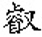
（204—239） 字元仲，曹丕的儿子，即魏明帝。[182] 《文选》 南朝梁昭明太子萧统编选。内选秦汉至齐梁间的诗文，共三十卷，是我国最早的一部诗文总集。唐代李善为之作注，分为六十卷。曹丕《典论·论文》，见该书第五十二卷。
[183] “为艺术而艺术” 十九世纪法国诗人戈蒂叶（T.Gautier）提出的一种文艺观点（见小说《莫班小姐》序）。他认为艺术可以超越一切功利而存在，创作的目的就在于艺术作品的本身，与社会政治无关。
[184] 文章事可以留名声于千载 曹丕《典论·论文》：“盖文章经国之大业，不朽之盛事。年寿有时而尽，荣乐止乎其身，二者必至之常期，未若文章之无穷。是以古之作者，寄身于翰墨，见意于篇籍，不假良史之辞，不托飞驰之势，而声名自传于后。”
[185] 文章小道 曹植《与杨德祖（修）书》：“辞赋小道，固未足以揄扬大义，彰示来世也。昔扬子云先朝执戟之臣耳，犹称壮夫不为也；吾虽德薄，位为藩侯，犹庶几戮力上国，流惠下民，建永世之业，留金石之功；岂徒以翰墨为勋绩，辞赋为君子哉！”
[186] 曹植早年以文才为曹操所爱，屡次想立他为太子；他也结纳杨修、丁仪、丁廙等为羽翼，在曹操面前和曹丕争宠。但他后来因为任性骄纵，失去了曹操的欢心，终于未得嗣立。到了曹丕即位以后，他常被猜忌，更觉雄才无所施展。明帝时又一再上表求“自试”，希望能够用他带兵去征吴伐蜀，建功立业，但他的要求也未实现。
[187] “建安七子” 这个名称始于曹丕的《典论·论文》：“今之文人，鲁国孔融文举，广陵陈琳孔璋，山阳王粲仲宣，北海徐干伟长，陈留阮瑀元瑜，汝南应
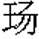
德琏，东平刘桢公干：斯七子者，于学无所遗，于辞无所假，咸以自骋骥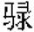
于千里，仰齐足而并驰。”后人据此便称孔融等为“建安七子”。按孔融（153—208），鲁国（今山东曲阜）人，汉献帝时为北海相，太中大夫。陈琳（？—217），广陵（今江苏江都）人，曾任司空（曹操）军谋祭酒。王粲（177—217），山阳高平（今山东邹县）人，曾任丞相（曹操）军谋祭酒、侍中。徐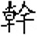
（171—217），北海（今山东潍坊西南）人，曾任司空军谋祭酒、五官将（曹丕）文学。阮瑀（？—212），陈留尉氏（今河南尉氏）人，曾任司空军谋祭酒。应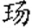
（？—217），汝南（今河南汝南）人，曾任丞相掾属、五官将文学。刘桢（？—217），东平（今山东东平）人，曾任丞相掾属。[188] 曹丕在《典论·论文》中评论孔融的文章说：“孔融体气高妙，有过人者。然不能持论，理不胜词，以至乎杂以嘲戏；及其所善，扬、班俦也。”按“建安七子”中，陈琳等都是曹操门下的属官，只有孔融例外；在年龄上，他比其余六人约长十余岁而又最先逝世，年辈也不相同。他没有应酬和颂扬曹氏父子的作品，而且还常常讽刺曹操。《后汉书·孔融传》载：“曹操攻屠邺城，袁氏妇子多见侵略，而操子丕私纳袁熙（按为袁绍子）妻甄氏。融乃与操书，称‘武王伐纣，以妲己赐周公’。操不悟，后问出何经典。对曰：‘以今度之，想当然耳。’……时年饥兵兴，操表制酒禁，融频书争之，多侮慢之辞。”唐代章怀太子（李贤）注引孔融与曹操论酒禁书，其中有“夏商亦以妇人失天下，今令不断婚姻。而将酒独急者，疑但惜谷耳”等语。
[189] “何以解忧？惟有杜康” 见曹操的《短歌行》。杜康，相传为周代人，善造酒。
[190] 关于曹操杀孔融的经过，《后汉书·孔融传》说：“曹操既积嫌忌，而郗虑复搆成其罪，遂令丞相军谋祭酒路粹枉状奏融曰：‘……（融）前与白衣祢衡跌荡放言，云：“父之于子，当有何亲？论其本意，实为情欲发耳。子之于母，亦复奚为？譬如寄物瓶中，出则离矣。”……大逆不道，宜极重诛。’书奏，下狱弃市。”又《三国志·魏书·崔琰传》注引孙盛《魏氏春秋》，内载曹操宣布孔融罪状的令文说：“平原祢衡受传融论，以为父母与人无亲，譬若缻器，寄盛其中。又言若遭饿馑，而父不肖，宁赡活余人。融违天反道，败伦乱理，虽肆市朝，犹恨其晚。”
[191] 祢衡（173—198） 字正平，平原般（今山东临邑）人，汉末文学家。他恃才不仕，性刚傲慢，与孔融、杨修友善，曾屡次羞辱曹操；因为他文名很大，曹操虽想杀他而又有所顾忌，便将他送与刘表，后因侮慢刘表，又被送给江夏太守黄祖，终为黄祖所杀，死时年二十六岁。
[192] 何晏（？—249） 字平叔，南阳宛（今河南南阳）人。曹操的女婿。齐王曹芳时，曹爽执政，用他为吏部尚书，后与曹爽同时被司马懿所杀。《三国志·魏书·曹爽传》说他“少以才秀知名，好老庄言，作《道德论》及诸文赋著述凡数十篇”。
[193] 关于何晏搽粉的事，《三国志·魏书·曹爽传》注引鱼豢《魏略》说：“晏性自喜，动静粉白不去手，行步顾影。”但晋代人裴启所著《语林》则说：“（晏）美姿仪，面绝白，魏文帝疑其著粉；后正夏月，唤来，与热汤饼，既炎，大汗出，随以朱衣自拭，色转皎洁，帝始信之。”
[194] 关于何晏服药的事，《世说新语·言语》载：“何平叔云：服五石散，非唯治病，亦觉神明开朗。”刘孝标注引秦丞相（按当作秦承祖）《寒食散论》说：“寒食散之方，虽出汉代，而用之者寡，靡有传焉。魏尚书何晏首获神效，由是大行于世，服者相寻。”又隋代巢元方《诸病源候论》卷六《寒食散发候》篇说：“皇甫（谧）云：寒食药者，世莫知焉，或言华佗，或曰仲景（张机）。……近世尚书何晏，耽声好色，始服此药。心加开朗，体力转强。京师翕然，传以相授。……晏死之后，服者弥繁，于时不辍。”
[195] 巢元方 隋代人，炀帝时任太医博士，大业六年奉诏撰《诸病源候论》五十卷。关于寒食散的服法与解法，详见该书卷六《寒食散发候》篇。
[196] “扪虱而谈” 这是王猛的故事。王猛（325—375），字景略，北海剧（今山东寿光）人，隐居华山。《晋书·王猛传》说：“桓温入关，猛被褐而诣之，一面谈当世之事，扪虱而言，旁若无人。”
[197] 葛洪（约283—363） 字稚川，号抱朴子，句容（今江苏句容）人。晋惠帝时拜伏波将军，赐关内侯。《晋书·葛洪传》说他“为人木讷，不好荣利，……究览典籍，尤好神仙导养之法。”所著《抱朴子》，共八卷，分内外二篇，内篇论神仙方药，外篇论时政人事。关于服散的记载，见该书内篇。
[198] 关于服散作假的事，《太平广记》卷二四七引侯白《启颜录》载：“后魏孝文帝时，诸王及贵臣多服石药，皆称石发。乃有热者，非富贵者，亦云服石发热，时人多嫌其诈作富贵体。有一人于市门前卧，宛转称热，要人竞看，同伴怪之，报曰：‘我石发。’同伴人曰：‘君何时服石，今得石发？’曰：‘我昨市米中有石，食之今发。’众人大笑。自后少有人称患石发者。”
[199] 关于闻讳而哭的事，《世说新语·任诞》载：“桓南郡（桓玄）被召作太子洗马，船泊荻渚。王大（王忱）服散后已小醉，往看桓，桓为设酒，不能冷饮，频语左右，令温酒来。桓乃流涕呜咽，王便欲去。桓以手巾掩泪，因谓王曰：‘犯我家讳，何预卿事。’王叹曰：‘灵宝（桓玄小名）故自达。’”按桓玄的父亲名温，所以他听见王忱叫人温酒便哭泣起来。
[200] 王弼（226—249） 字辅嗣，魏国山阳（今河南焦作）人。王粲的族孙。《三国志·魏书·钟会传》说：“弼好论儒道，辞才逸辩，注《易》及《老子》，为尚书郎。”夏侯玄（209—254），字太初，沛国谯（今安徽亳县）人。《三国志·魏书·夏侯尚传》说：“（玄）少知名，弱冠为散骑黄门侍郎……正始初，曹爽辅政。玄，爽之姑子也。累迁散骑常侍、中护军。……顷之，为征西将军，假节都督雍、凉州诸军事。”曹爽被司马懿所杀后，他也为司马师所杀。
[201] “正始名士” 《世说新语·文学》“袁彦伯作《名士传》成”条下梁刘孝标注：“宏（彦伯名）以夏侯太初、何平叔、王辅嗣为正始名士。阮嗣宗、嵇叔夜、山巨源、向子期、刘伯伦、阮仲容、王浚仲为竹林名士。”按正始（240—249），魏废帝齐王曹芳的年号。
[202] 《世说新语》 南朝宋刘义庆撰。内容是记述东汉至东晋间一般文士学士的言谈风貌轶事等。有南朝梁刘孝标所作注释。今传本共三卷，三十六篇。按刘义庆（403—444），彭城（今江苏徐州）人，宋武帝刘裕的侄子，袭爵为临川王，曾任南兖州刺史。
[203] 司马懿（179—251） 字仲达，河内温县（今河南温县）人。初为曹操主簿，魏明帝时迁大将军。齐王曹芳即位后，他专断国政；死后其子司马昭继为大将军，日谋篡位。咸熙二年（265），昭子司马炎代魏称帝，建立晋朝。按夏侯玄是被司马师所杀，作者误记为司马懿。
[204] “解散方” 《唐书·经籍志》著录《解寒食散方》十三卷，徐叔和撰；《新唐书·艺文志》著录《解寒食方》十五卷，徐叔向撰。
[205] 皇甫谧（215—282） 字士安，安定朝那（今甘肃平凉）人。晋朝初年屡征不出，著有《高士传》、《逸士传》、《玄晏春秋》等。《晋书·皇甫谧传》载有他的一篇上司马炎疏，其中自述因吃散而得到的种种苦痛说：“臣以
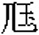
弊，迷于道趣。……又服寒食药，违错节度，辛苦荼毒，于今七年。隆冬裸袒食冰，当暑烦闷，加以咳逆，或若温疟，或类伤寒，浮气流肿，四肢酸重。于今困劣，救命呼噏，父兄见出，妻息长诀。”[206] 关于拔剑逐蝇的故事，《三国志·魏书·梁习传》注引《魏略》：“（王）思又性急，尝执笔作书，蝇集笔端，驱去复来，如是再三。思恚怒，自起逐蝇，不能得，还取笔掷地，蹋坏之。”按清代张英等所编《渊鉴类函》卷三一五《褊急》门载王思事，有“思自起拔剑逐蝇”的话，但未注明引用书名。按王思，济阴（今山东定陶）人，正始中为大司农。
[207] “竹林七贤” 《三国志·魏书·王粲传》内附述嵇康事略，裴注引《魏氏春秋》说：“康寓居河内之山阳县，……与陈留阮籍、河内山涛、河南向秀、籍兄子咸、琅琊王戎、沛人刘伶相与友善，游于竹林，号为‘七贤’。”《世说新语·任诞》亦有一则，说七人“常集于竹林之下，肆意酣畅，故世谓‘竹林七贤’”。参看本篇注〔39〕。
[208] 嵇康（223—262） 字叔夜，谯国铚（今安徽宿县）人，诗人。《晋书·嵇康传》说：“康早孤，有奇才，远迈不群。……学不师受，博览无不该通，长好老庄。与魏宗室婚，拜中散大夫。常修养性服食（服药）之事，弹琴咏诗，自足于怀。……康善谈理，又能属文，其高情远趣，率然玄远。”他的著作，现存《嵇康集》十卷，有鲁迅校本。
[209] 阮籍（210—263） 字嗣宗，陈留尉氏（今河南尉氏）人，阮瑀之子，诗人，与嵇康齐名。仕魏为从事中郎、步兵校尉。《晋书·阮籍传》说他“博览群籍，尤好庄老。嗜酒能啸，善弹琴。”又说：“籍本有济世志，属魏晋之际，天下多故，名士少有全者，籍由是不与世事，遂酣饮为常。”他的著作，现存《阮籍集》十卷。
[210] 刘伶 字伯伦，沛国（今安徽濉溪）人。仕魏为建威参军。性放纵嗜酒，著有《酒德颂》，托言有大人先生，“止则操巵执觚，动则挈榼提壶，唯酒是务，焉知其余。”有“贵介公子，搢绅处士”在他的面前“陈说礼法”，而他“方捧甖承槽，衔杯漱醪，奋髯箕踞，枕
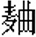
藉糟，无思无虑，其乐陶陶。”[211] 关于阮籍能为青白眼，见《晋书·阮籍传》：“籍又能为青白眼，见礼俗之士，以白眼对之。”他的母亲死了，“嵇喜来吊，籍作白眼，喜不怿而退。喜弟康闻之，乃赍酒挟琴造焉，籍大悦，乃见青眼。由是礼法之士疾之若雠。”
[212] “口不臧否人物” 语出《晋书·阮籍传》：“籍虽不拘礼教，然发言玄远，口不臧否人物。”
[213] 晋代常有子呼父名的例子，如《晋书·胡母辅之传》：“辅之正酣饮，谦之（辅之的儿子）而厉声曰：‘彦国（辅之的号），年老不得为尔！将令我尻背东壁。’辅之欢笑，呼入与共饮。”又《王蒙传》：“王蒙，字仲祖……美姿容，尝览镜自照，称其父字曰：‘王文开生如此儿耶！’”
[214] 关于刘伶裸形见客的事，《世说新语·任诞》载：“刘伶恒纵酒放达，或脱衣裸形在屋中，人见讥之。伶曰：‘我以天地为栋宇，屋室为衣，诸君何为入我中？’”刘孝标注引邓粲《晋纪》所记略同。
[215] 《大人先生传》 阮籍借“大人先生”之口来抒写自己胸怀的一篇文章。这里所引的三句是“大人先生”所作的歌。
[216] 关于阮籍借醉辞婚的故事，《晋书·阮籍传》载：“文帝（司马昭，鲁迅误记为司马懿）初欲为武帝（司马炎）求婚于籍，籍醉六十日，不得言而止。”
[217] 颜延之（384—456） 字延年，琅琊临沂（今山东临沂）人，南朝宋诗人。官至金紫光禄大夫。《文选》卷二十三阮籍《咏怀》诗下，李善注引颜延之的话：“嗣宗身仕乱朝，常恐罹谤遇祸，因兹发咏，故每有忧生之嗟；虽志在刺讥，而文多隐避，百代之下，难以情测，故粗明大意，略其幽旨也。”
[218] 《难自然好学论》 嵇康为反驳张邈（字辽叔）的《自然好学论》而作的一篇论文。
[219] 管叔蔡叔 是周武王的两个兄弟。《史记·管蔡世家》说：“武王已克殷纣，平天下，封功臣昆弟。于是封叔鲜于管，封叔度于蔡，二人相纣子武庚禄父（按禄父为武庚之名），治殷遗民。封叔旦于鲁而相周，为周公。……武王既崩，成王少，周公旦专王室。管叔、蔡叔疑周公之为不利于成王，乃挟武庚以作乱。周公旦承成王命伐诛武庚，杀管叔，而放蔡叔，迁之。”嵇康的《管蔡论》为管、蔡辩解，说“管、蔡皆服教殉义，忠诚自然。……周公践政，率朝诸侯。……而管、蔡服教，不达圣权，卒遇大变，不能自通。忠于乃心，思在王室。遂乃抗言率众，欲除国患。”
[220] 《与山巨源绝交书》 山巨源，即“竹林七贤”之一的山涛（205—283），河内怀（今河南武陟）人。他在魏元帝（曹奂）景元年间投靠司马昭，曾任选曹郎，后将去职，欲举嵇康代任，康作书拒绝，并表示和他绝交，书中自说不堪受礼法的束缚，“又每非汤武而薄周孔，在人间不止，此事会显，世教所不容。”后来嵇康受朋友吕安案的牵连，钟会便乘机劝司马昭把他杀了。《三国志·魏书·王粲传》注引《魏氏春秋》叙述他被杀的经过说：“大将军（司马昭）尝欲辟（征召）康。康既有绝世之言，又从子不善，避之河东，或云避世。及山涛为选曹郎，举康自代，康答书拒绝，因自说不堪流俗而非薄汤武。大将军闻而怒焉。初，康与东平吕昭子巽及巽弟安亲善。会巽淫安妻徐氏，而诬安不孝，囚之。安引康为证，康义不负心，保明其事。安亦至烈，有济世志力。钟会劝大将军因此除之，遂杀安及康。康临刑自若，援琴而鼓，既而叹曰：‘雅音于是绝矣！’时人莫不哀之。”按杀嵇康的是司马昭，鲁迅误记为司马懿。
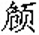
（267—300） 字逸民，河东闻喜（今山西闻喜）人。晋惠帝时为国子祭酒，兼右军将军，迁尚书左仆射，后为司马伦（赵王）所杀。《晋书·裴传》说：“深患时俗放荡，不尊儒术。何晏、阮籍素有高名于世，口谈浮虚，不遵礼法，尸禄耽宠，仕不事事；至王衍之徒，声誉太盛，位高势重，不以物务自婴，遂相仿效，风教陵迟，乃著《崇有》之论以释其蔽。”[222] 孙盛（约306—378） 字安国，太原中都（今山西平遥）人。曾任桓温参军，官至给事中。著有《魏氏春秋》、《晋阳秋》等。他的《老聃非大贤论》，批评当时清谈家奉为宗主的老聃，用老聃自己的话证明他的学说的自相矛盾，不切实际，从而断定老聃并非大贤。
[223] 何曾（197—278） 字颖考，陈国阳夏（今河南太康）人。司马炎篡魏，他因劝进有功，拜太尉，封公爵。《晋书·何曾传》说：“时（按当为魏高贵乡公即位初年）步兵校尉阮籍负才放诞，居丧无礼。曾面质籍于文帝（鲁迅误记为司马懿）座曰：‘卿纵情背礼，败俗之人。今忠贤执政，综核名实，若卿之曹，不可长也。’因言于帝曰：‘公方以孝治天下，而听阮籍以重哀（母丧）饮酒食肉于公座。宜摈四裔，无令汙染华夏。’帝曰：‘此子羸病若此，君不能为吾忍耶！’曾重引据，辞理甚切。帝虽不从，时人敬惮之。”
[224] “明于礼义而陋于知人心”二句，见《庄子·田子方》：“温伯雪子适齐，舍于鲁，鲁人有请见之者，温伯雪子曰：‘不可，吾闻中国之君子，明乎礼义而陋于知人心，吾不欲见也。’”据唐代成玄英注：温伯，字雪子，春秋时楚国人。鲁迅误记为季札。
[225] 阮籍不愿儿子效法自己的事，见《晋书·阮籍传》：“（籍）子浑，字长成，有父风，少慕通达，不饰小节，籍谓曰：‘仲容已豫吾此流，汝不得复尔。’”又《世说新语·任诞》也载有此事。按阮咸，字仲容，阮籍兄阮熙之子。
[226] 嵇康怠慢钟会，见《晋书·嵇康传》：“（康）性绝巧而好锻（打铁）。宅中有一柳树甚茂，乃激水圜之，每夏月，居其下以锻。”又说：“初，康居贫，尝与向秀共锻于大树之下，以自赡给。颍川钟会，贵公子也，精练有才辩，故往造焉。康不为之礼，而锻不辍。良久会去，康谓曰：‘何所闻而来，何所见而去？’会曰：‘闻所闻而来，见所见而去。’会以此憾之。”按钟会（225—264），字士季，颍川长社（今河南长葛）人。司马昭的重要谋士，官至左徒。魏常道乡公景元三年（262）拜镇西将军，次年统兵伐蜀，蜀平后谋反，被杀。
[227] 《家诫》 见《嵇康集》卷十。鲁迅所举的这几条的原文是：“君子用心，所欲准行，自当量其善者，必拟议而后动。……所居长吏，但宜敬之而已矣，不当极亲密，不宜数往；往当有时。其有众人，又不当独在后，又不当宿。所以然者，长吏喜问外事，或时发举，则怨者谓人所说，无以自免也。……若会酒坐，见人争语，其形势似欲转盛，便当无何舍去之。此将斗之兆也。坐视必见曲直，傥不能不有言，有言必是在一人；其不是者方自谓为直，则谓曲我者有私于彼，便怨恶之情生矣；或便获悖辱之言。……又慎不须离楼，强劝人酒，不饮自己；若人来劝己，辄当为持之，勿稍逆也。”（据鲁迅校本）按嵇康的儿子名绍，字延祖，《晋书·嵇绍传》说他“十岁而孤”。
[228] 刘勰（约465—约532） 字彦和，南东莞（今江苏镇江）人，南朝梁文艺理论家。曾任步兵校尉，晚年出家。著有《文心雕龙》。这里所引的两句，见于该书《才略》篇。
[229] 陶潜（约372—427） 又名渊明，字元亮，浔阳柴桑（今江西九江）人，晋代诗人。曾任彭泽令，因不满当时政治的黑暗和官场的虚伪，辞官归隐。著作有《陶渊明集》。梁代钟嵘在《诗品》中称他为“古今隐逸诗人之宗”，“五四”以后又常被人称为“田园诗人”。他在《乞食》一诗中说：“饥来驱我去，不知竟何之。行行至斯里，叩门拙言辞。主人解余意，遗赠岂虚来。谈谐终日夕，觞至辄倾杯。……衔戢知何谢，冥报以相贻。”又南朝宋檀道鸾《续晋阳秋》说：“江州刺史王弘造渊明，无履，弘从人脱履以给之。弘语左右为彭泽作履，左右请履度，渊明于众坐伸脚，及履至，著而不疑。”“采菊东篱下”句见他所作的《饮酒》诗第五首。
[230] 陶潜的《述酒》诗，据南宋汤汉的注语，以为它是为当时最重大的政治事变——晋宋易代而作，注语中说：“晋元熙二年（420）六月，刘裕废恭帝（司马德文）为零陵王，明年，以毒酒一甖授张伟使酖王，伟自饮而卒；继又令兵人逾垣进药，王不肯饮，遂掩杀之。此诗所为作，故以《述酒》名篇也。诗辞尽隐语，故观者弗省。……予反复详考，而后知决为零陵哀诗也。”（见《陶靖节诗注》卷三）
[231] 墨子（约前468—前376） 名翟，鲁国人，春秋战国时代思想家，墨家创始人。他认为“天下兼相爱则治，交相恶则乱”，提倡“兼爱”的学说。现存《墨子》书中有《兼爱》上中下三篇。杨子，即杨朱，战国时代思想家。他的学说的中心是“为我”，《孟子·尽心（上）》说：“杨子取为我，拔一毛而利天下，不为也。”他没有著作留传下来，后人仅能从先秦书中略知他的学说的大概。
[232] 陶潜诗文中提到“死”的地方很多，如《己酉岁九月九日》中说：“万化相寻绎，人生岂不劳。从古皆有没，念之心中焦。”又《与子俨等疏》中说：“天地赋命，生必有死；自古圣贤，谁能独免。”等等。
[233] 本篇最初发表于1927年12月17日《语丝》周刊第四卷第一期。
[234] 犬儒 原指古希腊昔匿克学派（Cynicism）的哲学家。他们过着禁欲的简陋的生活，被人讥诮为穷犬，所以又称犬儒学派。这些人主张独善其身，以为人应该绝对自由，否定一切伦理道德，以冷嘲热讽的态度看待一切。作者在1928年3月8日致章廷谦信中说：“犬儒＝Cynic，它那‘刺’便是‘冷嘲’。”
[235] 约翰穆勒（J.S.Mill，1806—1873） 英国哲学家、经济学家。参看本卷第48页注〔9〕。
[236] 这里所说的“演讲录”，指当时不断编印出售的蒋介石、汪精卫、吴稚晖、戴季陶等人的演讲集。作者在写本文后第二天（9月25日）致台静农信中说：“现在是大卖戴季陶讲演录了（蒋介石的也行了一时）。”他们当时在各地发表的演讲，内容和在“四一二”政变以前的演讲很不相同：政变以前，他们在口头上拥护孙中山联俄、联共、扶助农工的三大政策；政变以后，便竭力鼓吹反苏、反共，压迫工农。
[237] “阔的聪明人种种譬如昨日死” 也是指蒋介石、汪精卫等人。“如昨日死”是引用曾国藩的话：“从前种种如昨日死，从后种种如今日生。”1927年8月18日广州《民国日报》就蒋（介石）汪（精卫）合流反共所发表的一篇社论中，也引用曾国藩的这句话，其中说：“以前种种，譬如昨日死；以后种种，譬如今日生；今后所应负之责任益大且难，这真要我们真诚的不妥协的非投机的同志不念既往而真正联合。”
[239] “与父老约，法三章耳” 语出《史记·高祖本纪》：“汉元年（前206）十月，沛公（刘邦）兵遂先诸侯至霸上。……遂西入咸阳……还军霸上。召诸县父老豪杰曰：‘父老苦秦苛法久矣，诽谤者族，偶语者弃市。吾与诸侯约，先入关者王之，吾当王关中。与父老约，法三章耳：杀人者死，伤人及盗抵罪。余悉除去秦法。’”又《汉书·刑法志》载：“汉兴，高祖初入关，约法三章……其后四夷未附，兵革未息，三章之法不足以御奸，于是相国萧何捃摭秦法，取其宜于时者，作律九章。”
[240] 本篇最初发表于1927年11月19日《语丝》周刊第一五五期。
[241] 王独清（1898—1940） 陕西西安人，曾留学日、法，创造社成员。他这篇通信发表在《创造月刊》第一卷第七期（1927年7月15日），题为《去雁》，是他在这年五月写给成仿吾、何畏两人的。信末说他自广州赴上海，经过香港时，一个英国人带着两个中国人上船“查关”，翻箱倒箧，并随意打骂旅客，有一个又向他索贿五块钱等事。《创造月刊》，创造社主办的文艺刊物，郁达夫、成仿吾等编辑，1926年3月创刊于上海，1929年1月停刊，共出十八期。
[243] 蒋径三（1899—1936） 浙江临海人，当时任中山大学图书馆馆员、历史语言研究所助理员。
[244] 《大陆报》 美国人密勒（F.Millard）1911年8月23日在上海创办的英文日报。1926年左右由英国人接办，三十年代初由中国人接办。1948年5月停刊。
[245] “学者” 指顾颉刚等。参看《华盖集续编·海上通信》。
[246] 关于胡须的形状，参看《坟·说胡须》。下文说的关于胡须颜色的警告，指当时广州《国民新闻》副刊《新时代》发表的尸一《鲁迅先生在茶楼上》一文，其中说：“把他的胡子研究起来，我的结论是，他会由黑而灰，由灰而白。至于有人希望或恐怕它变成‘红胡子’，那就非我所敢知的了。”尸一，即梁式（1894—1972），笔名尸一，广东台山人。当时是广州《国民新闻》副刊《新时代》的编辑，抗日战争期间在上海担任汪伪报纸《中华副刊》撰稿人。
[247] 苗瑶 我国两个少数民族。他们在古代由长江流域发展至黄河流域，居住于中国中部；后来又逐渐被迫转移至西南、中南一带山区。
[248] 本篇最初发表于1927年10月21日上海《民众旬刊》第五期。
[249] 唐南遮（G.D'Annunzio，1863—1938） 通译邓南遮，意大利作家。他在第一次世界大战时拥护并参加帝国主义战争，以后又拥护墨索里尼政权，受到法西斯主义党的推崇。其创作主要有剧本《琪珴康陶》，小说《死的胜利》等。
[250] 霍普德曼（G.Hauptmann，1862—1946） 德国剧作家。早年写过《日出之前》、《织工》等有一定社会意义的作品。在第一次世界大战期间，他竭力赞助德皇威廉二世的武力政策，并为德军在比利时的暴行辩护。
[251] 伊本纳兹（V.Blasco-Ibáñez，1867—1928） 通译伊巴涅兹，西班牙作家、西班牙共和党的领导人。因为反对王党，曾两次被西班牙政府监禁。1923年又被放逐，侨居法国。主要作品有小说《农舍》、《启示录的四骑士》等。
[252] 吴稚晖于1927年秉承蒋介石意旨，向国民党中央监察委员会提案，以“救护”国民党为名发起“清党”。参看本卷第480页注〔17〕。
[253] 这里说的指挥刀下的“革命文学”，指当时一些国民党文人发起的反共文学。如1927年间在广州出现的所谓“革命文学社”，出版《这样做》旬刊，第二期刊登的《革命文学社章程》中就有“本社集合纯粹中国国民党党员，提倡革命文学……从事本党的革命运动”等语。
[254] “杀身成仁” 语出《论语·卫灵公》：“子曰：‘志士仁人，无求生以害仁，有杀身以成仁。’”
[255] “笙歌归院落”二句，见唐代白居易所作《宴散》一诗。宋代欧阳修《归田录》卷二说：“晏元献公喜评诗。尝曰：‘老觉腰金重，慵便枕玉凉。’未是富贵语，不如‘笙歌归院落，灯火下楼台’。此善言富贵者也。人皆以为知言。”
[256] “赋得革命，五言八韵” 科举时代的试帖诗，大都用古人的诗句或成语，冠以“赋得”二字，以作诗题。清朝又规定每首为五言八韵，即五字一句，十六句一首，二句一韵。这里指那些只有革命口号，空洞无物的作品。
[257] 叶遂宁（C.A.Есенин，1895—1925） 通译叶赛宁，苏联诗人。以描写宗法制度下农村田园生活的抒情诗著称。十月革命时曾向往革命，写过一些赞扬革命的诗，如《苏维埃俄罗斯》等。但革命后陷入苦闷，于1925年12月自杀。
[258] 梭波里（A.M.Cобοль，1888—1926） 苏联作家。他在十月革命之后曾接近革命，但终因不满于当时的现实而自杀。主要作品有长篇小说《尘土》、短篇小说集《樱桃开花的时候》等。
[259] 本篇最初印入1927年12月上海开明书店出版的《尘影》一书，题为《〈尘影〉序言》，稍后又刊载于1928年1月1日上海《文学周报》第二九七期。
[260] 在拾煤渣的老妇人的魂灵中看见拜金主义 这是针对胡适“提倡拜金主义”的文章而说的。该文说：“美国人因为崇拜大拉（按“大拉”是英语dollar的音译，意思是“元”，后泛指金钱），所以已经做到了真正‘夜不闭户，路不拾遗’的理想境界了。……我们不配骂人崇拜大拉；请回头看看我们自己崇拜的是什么？一个老太婆，背着一只竹箩，拿着一根铁杆，天天到弄堂里去扒垃圾堆，去寻那垃圾堆里一个半个没有烧完的煤球，一寸两寸稀烂奇脏的破布。——这些人崇拜的是什么！”（据1927年11月《语丝》周刊第一五六期《随看录三》）
[261] 《尘影》 中篇小说，黎锦明作。它描写1927年蒋介石国民党“清党”政变前后南方一个小县城的局势。这个小县城在大革命中成立“县执行委员会”和“农工纠察队”，斗争地主豪绅；但在国民党发动政变时，当地土豪和各色反共人物，与国民党军官相勾结，对革命力量突施袭击，屠杀了许多革命者和工农群众。黎锦明，参看本卷第511页注〔7〕。
[262] 《尘影》中有这样的描写：大土豪刘百岁被捕，群众要求将他处死。他的儿子用几千元向混进县党部当委员的旧官僚韩秉猷行贿求救。韩受贿后宴请同党商议，说是“人家为孝道，我就为仁义”，最后商定将刘百岁放出。“三道血”是书中主要人物县执行委员会主席、革命者熊履堂在时局逆转后被杀头时所溅的血；“难看”是旁观者的议论。
[263] 《尘影》最末一章描写熊履堂被杀时，他的儿子小宝正从幼稚园放学出来，唱着“打倒列强、除军阀”的歌曲，但未叙明后来结果如何。
[264] 本篇最初发表于1927年12月19日上海《时事新报》副刊《青光》。
[265] 陶元庆（1893—1929） 字璇卿，浙江绍兴人，美术家。曾任浙江台州第六中学、上海立达学园、杭州美术专科学校教员。鲁迅前期著译《彷徨》、《朝花夕拾》、《坟》、《苦闷的象征》等书的封面都由他作画。
[266] 作者在陶元庆第一回绘画展览时所说的话，即1925年3月16日所作的《“陶元庆氏西洋绘画展览会目录”序》（收入《集外集拾遗》）。
[267] 密达尺 法国长度单位Metre的音译，一译米突。后来为大多数国家所采用，通称为“米”。
 尺 东汉章帝建初六年（81）所造的一种铜尺。
尺 东汉章帝建初六年（81）所造的一种铜尺。[269] 营造尺 清朝工部营造工程中所用的尺子，也称“部尺”，当时用作标准的长度单位。
[270] 本篇最初发表于1928年1月7日《语丝》周刊第四卷第四期。
[271] 卢梭（J.J.Rousseau，1712—1778） 法国启蒙思想家。他的主要著作《民约论》（1762年出版），提出“天赋人权”学说，抨击封建专制制度，在十八世纪欧洲资产阶级民主革命时期影响很大。他因此备受僧侣和贵族的迫害，以致不得不避居瑞士和英国。
[272] 《爱弥尔》 通译《爱弥儿》，卢梭所著的教育小说，1762年出版。在前四篇关于主要人物爱弥儿的描述中，作者认为人类在“自然状态”下是平等的，应尊重人的自然发展。但第五篇叙述对莎菲亚的教育时，作者又认为“人既有差别，人格遂亦有差别，女子有女子的人格。”由于此书反封建、反宗教色彩浓厚，出版后曾被巴黎议会议决焚毁。中文本系魏肇基所译，1923年6月商务印书馆出版，序文为译者所作。
[273] 梁实秋（1902—1987） 浙江杭县（今属余杭）人，作家、翻译家，新月社的重要成员。曾留学美国，是美国新人文主义者白璧德的学生。回国后曾任暨南大学、复旦大学等校教授。他的《卢梭论女子教育》一文，原发表于1926年12月15日《晨报副刊》，后略加修改，重新刊载于1927年11月《复旦旬刊》创刊号。他认为卢梭关于女子教育的意见，“实足矫正近年来男女平等的学说”。
[274] 梁实秋在《卢梭论女子教育》中说：“近代生物学和心理学研究的结果，证明不但男子和女人是有差别的，就是男子和男子，女人和女人，又有差别。简而言之，天下就没有两个人是无差别的。什么样的人应该施以什么样的教育。”
[275] “自然的不平等” 卢梭在《论人类不平等的起源和基础》（1762年出版）中说：“人类中有两种不平等：一种，我把它叫做自然的或生理上的不平等，因为它是基于自然，由年龄、健康、体力及智慧或心灵的性质的不同而产生的；另一种可以称为精神上的或政治上的不平等，因为它是起因于一种协议，由于人们的同意而设定的，或者至少是它的存在为大家所认可的。”（据李常山译本，1926年商务印书馆出版。）
[276] “合吾人之胃口者则容纳之”二句，是梁实秋《卢梭论女子教育》中的话。
[277] 亚诺德（M.Arnold，1822—1888） 通译阿诺德，英国诗人、文艺批评家。牛津大学教授。梁实秋在所著《文学批评辩》、《文学的纪律》等文里常引用他的意见。
[278] 白璧德（I.Babbitt，1865—1933） 美国近代“新人文主义”运动的领导者之一，哈佛大学教授。他在《卢骚及浪漫主义》一书中，对卢梭多有攻击。梁实秋说卢梭“无一是处”，便是依据他的意见而来。
[279] Upton Sinclair 阿通·辛克莱（1878—1968），美国小说家。下文的《Mammonart》，即《拜金艺术》，辛克莱的一部用经济的观点解释历史上各时代的文艺的专著，1925年出版。California的Pasadena，即加利福尼亚州的帕萨第那城。按引文中的阿嶷是该书中一个原始时代的艺术家的名字。这里的引文是根据木村生死的日文译本《拜金艺术》（1927年东京金星堂出版）重译。
[280] Mammon 这个词来源于古代西亚的阿拉米语，经过希腊语移植到近代西欧各国语言中，指财富或财神，后转义为好利贪财的恶魔。古希腊神话中的财神是普路托斯（Ploutos）。
[281] 本篇最初发表于1928年1月14日《语丝》周刊第四卷第五期。
[282] 指梁实秋。他在1926年10月27、28日《晨报副刊》发表的《文学批评辩》一文中说：“物质的状态是变动的，人生的态度是歧异的；但人性的质素是普遍的，文学的品味是固定的。所以伟大的文学作品能禁得起时代和地域的试验。《依里亚德》在今天尚有人读，莎士比亚的戏剧在今天尚有人演，因为普遍的人性是一切伟大的作品之基础。”“人性论”是梁实秋在1927年前后数年间所写的文艺批评的根本思想。
[283] “岌岌乎殆哉” 语出《孟子·万章（上）》：“天下殆哉，岌岌乎！”孔子语，危险不安的意思。
[284] 汗不敢出 语出《世说新语·言语》：“战战栗栗，汗不敢出。”
[285] 本篇最初发表于1928年1月28日《语丝》周刊第四卷第七期。
[286] 同情文学 1927年春，孔圣裔、冯金高等在广州《民国日报》副刊《现代青年》上连续发表背叛共产党的“忏悔”的诗文，并对他们的叛变行为互表“同情”；3月间，谢立猷又在《现代青年》上发表《谈谈革命文艺》、《革命与文艺》等文章，称文艺“是人类同情的呼声”，“人类同情的应感”等等。所谓“同情文学”，当指这类文字。
[287] 珂罗连珂（В.Г.Короленко，1853—1921） 通译柯罗连科，俄国作家。曾因参加革命活动，被流放西伯利亚六年。著有中篇小说《盲音乐家》、文学回忆录《我的同时代人的故事》等。
[288] 本篇最初发表于1928年1月28日《语丝》周刊第四卷第七期。
[289] “大内档案” 指清朝存放于内阁大库内的诏令、奏章、朱谕、则例、外国的表章、历科殿试的卷子以及其他文件。内容庞杂，是有关清朝历史的原始资料。
[290] 罗振玉 参看本卷第408页注〔7〕。辛亥革命以后，他曾在文章中咒骂武昌起义为“盗起湖北”，自称“不忍见国门”；但他后来寓居天津，仍往来京津，常到故宫“朝见”废帝溥仪，并与一班遗老和日本帝国主义分子进行复辟的阴谋活动。1922年春，历史博物馆将大内档案残余卖给北京同懋增纸店，售价四千元；其后又由罗振玉以一万二千元买得；1927年9月，罗振玉又将它卖给日本人松崎。
[291] 金梁（1878—1962） 字息侯，驻防杭州的汉军旗人。清光绪进士，曾任京师大学堂提调、奉天新民府知府。民国后是坚持复辟的顽固分子。这里是指他在《东方杂志》第二十卷第四号（1923年2月25日）发表的《内阁大库档案访求记》一文。《东方杂志》，综合性刊物，商务印书馆出版，1904年3月在上海创刊，1948年12月停刊，共出四十四卷。
[292] 王国维（1877—1927） 字静安，号观堂，浙江海宁人，近代学者。早年留学日本，曾任学部图书局协修。著有《宋元戏曲史》、《观堂集林》、《人间词话》等。他一生和罗振玉的关系密切，在罗的影响下，受清废帝溥仪的征召，任所谓清宫“南书房行走”。后于1927年6月在北京颐和园昆明湖投水自杀。
[293] 蒋彝潜 事迹不详。他的《论档案的售出》一文，载1927年11月1日《北新》半月刊第二卷第一号。
[294] Sandwich 英语：夹肉面包片，音译三明治。
[295] Sentimental 英语：感伤的。按蒋彝潜的文章中充满“追悼”、“痛哭”、“去了！东渡！——一部清朝全史！”等语句。
[296] “国朝” 封建时代臣民称本朝为“国朝”，这里是指清朝。辛亥革命以后，罗振玉在文章中仍称清朝为“国朝”。
[297] 胡玉缙（1859—1940） 字绥之，江苏吴县人。清末曾任学部员外郎、京师大学堂文科教授。著有《许庼学林》等书。
[298] 南菁书院 在江苏江阴县城内，1884年（清光绪十年）江苏学政黄体芳创立，以经史词章教授学生，主讲者有黄以周、缪荃孙等人。曾刻有《南菁书院丛书》、《南菁讲舍文集》等。
[299] 夏曾佑（1865—1924） 字穗卿，浙江杭县（今余杭）人。光绪进士。他在清末与谭嗣同、梁启超等提倡新学，参加维新运动。1912年5月至1915年7月任北洋政府教育部社会教育司司长，1916年任京师图书馆馆长。他所著的《中国历史教科书》，从上古起到隋代止，共二卷，商务印书馆出版。后改名为《中国古代史》，列为该馆编印的《大学丛书》之一。
[300] F先生 指傅增湘（1872—1949），字沅叔，四川江安人，藏书家。1917年12月至1919年5月任北洋政府教育总长。著有《藏园群书题记》等书。
[302] 殿试 又叫廷试，皇帝主持的考试。殿试分三甲录取，第一甲赐进士及第，录取三名（状元、榜眼、探花），第二甲赐进士出身，第三甲赐同进士出身。
[303] 实录 封建王朝中某一皇帝统治时期的编年大事记，由当时的史臣奉旨编写。因材料较丰富，常为后来修史的人所采用。
[304] Y次长 指袁希涛（1866—1930），字观澜，江苏宝山（今属上海市）人。曾任江苏省教育会会长，1915年到1919年间先后两次任北洋政府教育部次长（后一次曾代总长）。
[305] C参事 指蒋维乔（1873—1958），字竹庄，江苏武进人。1912年至1917年间曾任北洋政府教育部参事，参与整理“大内档案”。
[306] “念兹在兹” 语出《尚书·大禹谟》。念念不忘的意思。
[307] Y T 指彦德，字明允，满洲正黄旗人，曾任清政府学部总务司郎中、京师学务局长。他在“大内档案”中得到蜀石经《偲梁传》九四〇余字。（罗振玉亦得《偲梁传》七十余字，后来两人都卖给庐江刘体乾；刘于1926年曾影印《孟蜀石经》八册。）
[308] 《司马法》 古代兵书名，共三卷，旧题齐司马穰苴撰，但实为战国时齐威王诸臣辑古代司马（掌管军政、军赋的官）兵法而成；其中曾附穰苴用兵的方法，所以称为《司马穰苴兵法》，后来《隋书·经籍志》等就以为是他所撰。
[309] 蜀石经 五代时后蜀皇帝孟昶命宰相毋昭裔楷书《易》、《诗》、《书》、三《礼》、三《传》、《论》、《孟》等十一经，刻石列于成都学宫。这种石刻经文的拓本，后世称为蜀石经。因为它是历代石经中唯一附有注文的一种，错字也比较少，所以为后来研究经学的人所重视。
[310] 本篇最初发表于1928年1月28日《语丝》周刊第四卷第七期，署名楮冠。
[311] 关于当时出现的一些期刊，作者稍后在《三闲集·“醉眼”中的朦胧》一文中说过：“旧历和新历的今年似乎于上海的文艺家们特别有着刺激力，接连的两个新正一过，期刊便纷纷而出了。他们大抵将全力用尽在伟大或尊严的名目上，不惜将内容压杀。”
[312] 关于美国富豪称北京捡煤渣老婆子为“同志”，参看本卷第572页注〔2〕。
[313] “以党治国” 蒋介石在“四一二”反共政变后为实行独裁统治而提出的口号。他在1927年4月30日发表的《告全国民众书》中说：“我们是主张‘以党治国’为救中国的唯一出路”，“我国民党是负责的政党，所以我们不许共产党混杂在里面，……我们‘以党治国’的主张，自有苦心精义。”
[314] 《古今史疑大全》 这是影射顾颉刚的《古史辨》而虚拟的书名。1926年6月，顾颉刚出版了《古史辨》第一册，内收有他自己和胡适等人所作讨论中国古史的文字及往来信札；书前有他的一篇自序，详述其身世、环境、求学经过与治学方法等等，长达一〇三页，就像是他的自传。“史疑”讽指该书中常以主观臆断的态度对待古代人物和史实。
[315] 《玉堂春》 叙述妓女苏三（玉堂春）遭遇的故事。最早见于《警世通言·玉堂春落难逢夫》，以后被改编为弹词、京剧、评剧、电影等。按白璧德文艺思想的追随者梁实秋在论卢梭关于女子教育的意见时，曾说男女“人格”有差别，“正当的女子教育应该是使女子成为完全的女子”。（参看本书《卢梭和胃口》）这里是说，像玉堂春那样“人格”被践踏的女性，应该是最符合梁实秋的理论的所谓“完全的女子”。
[316] 中国的法斯德 大概是指高长虹。法斯德即德国作家歌德诗剧《浮士德》中的主角浮士德，是欧洲传说中的一个冒险人物。高长虹在《1925北京出版界形势指掌图》中曾说：“鲁迅则常说郭沫若骄傲，我则说他的态度才能倒都好，颇有类似歌德的样子。”又说：“听一个朋友说，……郭沫若醉后写了一副对联给周作人，意思是什么成文豪置房产之类”。文中所说“同情”也是高长虹的话，参看本卷第521页注〔2〕。按高长虹说鲁迅“常说郭沫若骄傲”，完全出于“捏造”，参看《两地书·七三》。又所说郭沫若写对联给周作人，亦无其事。
[318] 指马寅初。参看本卷第181页注〔10〕。他留学美国时获哥伦比亚大学经济学博士学位。鲁迅在《两地书·五八》中说：“马寅初博士到厦门来演说，所谓‘北大同人’，正在发昏章第十一，排班欢迎。我固然是‘北大同人’之一，也非不知银行之可以发财，然而于‘铜子换毛钱，毛钱换大洋’学说，实在没有什么趣味，所以都不加入。”
[319] 指吴稚晖。他在国民党“清党”前后，经常发表这种反共言论。这一句迭见于他在1927年5月、7月给汪精卫的信中。按广州报纸曾称吴稚晖为“革命文学家”。参看本书《革命文学》一文。
[320] 《现代评论》为了扩大销路，曾在该刊“特别增刊”第一号（1925年10月28日）刊登“《现代评论》代售处”一表，分“京内”、“京外”、“国外”三栏，详列代售处一百多处，其中有百货店、药店、实业公司、同善社等等。
[321] 这是对于自称无政府主义者的国民党政要吴稚晖的讽刺。参看本卷第480页注〔17〕。安那其主义，英语Anarchism的音译，即无政府主义。
[322] 本篇最初发表于1926年4月16日《京报副刊》。
[323] “优美的差缺” 这是引用陈西滢的话。参看本卷第288页注〔11〕。
[327] 赵子昂的画马 参看本卷第251页注〔17〕。陈西滢在《致志摩》中说：“你听见过赵子昂——是不是他？——画马的故事罢？他要画一个姿势，就对镜伏地做出那个姿势来。鲁迅先生的文章也是对了他的大镜子写的，没有一句骂人的话不能应用在他自己的身上。”
[328] “某籍” 1925年5月27日，作者与马裕藻、沈尹默、李泰棻、钱玄同、沈兼士、周作人七人，针对杨荫榆开除六位女师大学生自治会职员的行径，联名发表《对于北京女子师范大学风潮宣言》。同月30日，陈西滢在《现代评论》第一卷第二十五期的《闲话》中攻击这个宣言，其中有“以前我们常常听说女师大的风潮，有在北京教育界占最大势力的某籍某系的人在暗中鼓动”的话。某籍，指浙江。参看本卷第85页注〔8〕。
[329] 1925年8月，北京大学评议会为了反对章士钊非法解散女师大，议决与教育部脱离关系，宣布独立，有十七位教员曾发表《致本校同事公函》。这里说的北大评议员反章士钊宣言即指此事。
[330] 逃到东交民巷或天津 1926年春夏间，冯玉祥国民军与奉系军阀张作霖等作战期间，国民军因发觉段祺瑞勾结奉军，于4月9日包围执政府，收缴卫队枪械，段祺瑞、章士钊等逃匿东交民巷（当时外国使馆所在地）。又1925年5月，章士钊禁止爱国学生纪念“五七”国耻日，北京学生于7日和9日举行游行示威，要求罢免章士钊，章曾避居天津租界。
[331] 陈西滢在《现代评论》第三卷第七十期（1926年4月10日）发表的《闲话》中曾对当时北方的革命力量加以讽刺说：“每一次飞艇（按指奉军飞机）正在我头上翱翔着的时候，我就免不了羡慕那些安居在东交民巷的政客，富人，和革命猛进者及民众的首领。”
[332] “唯饭史观” 这是讽刺陈西滢的。陈在《现代评论》第二卷第四十九期（1925年11月14日）《闲话》中说：“我是不信唯物史观的，可是中国的政治，我相信实在可以用唯物观来解释，也只可这样的解释。种种的战争，种种的政变，出不了‘饭碗问题’四个字。”
[333] “大衍之数” 语见《周易·系辞》：“大衍之数五十。”后来“大衍”就成为五十的代词。
[334] 指李大钊及邵振青。李大钊于1927年4月28日在北京被奉系军阀张作霖绞杀；邵振青于1926年4月26日在北京被奉系军阀张宗昌枪杀。邵振青（1888—1926），字飘萍，浙江金华人。《京报》创办人兼总编辑。
[335] 《现代评论》的这个广告登在1928年9月12日北京《新晨报》。
[336] 1928年9月，国民党浙江省党务指导委员会以“言论乖谬，存心反动”的罪名，查禁书报十五种，《语丝》是其中的一种。
[337] 林语堂 参看本卷第416页注〔9〕。《翦拂集》是林语堂在1924年至1926年间所作杂文的结集，1928年12月北新书局出版。集中有《“发微”与“告密”》一文，揭露段祺瑞、章士钊等在三一八惨案中的行为，其中曾提及作者这篇文章，有“鲁迅先生以其神异之照妖镜一照，照得各种的丑态都照出来”等语。
注 释
[322] 本篇最初发表于1926年4月16日《京报副刊》。
[323] “优美的差缺” 这是引用陈西滢的话。参看本卷第288页注〔11〕。
[324] “整顿学风” 参看本卷第128页注〔4〕。
[325] “党同伐异” 参看本卷第6页注〔7〕。
[326] “睚眦之怨” 参看本卷第318页注〔7〕。
[327] 赵子昂的画马 参看本卷第251页注〔17〕。陈西滢在《致志摩》中说：“你听见过赵子昂——是不是他？——画马的故事罢？他要画一个姿势，就对镜伏地做出那个姿势来。鲁迅先生的文章也是对了他的大镜子写的，没有一句骂人的话不能应用在他自己的身上。”
[328] “某籍” 1925年5月27日，作者与马裕藻、沈尹默、李泰棻、钱玄同、沈兼士、周作人七人，针对杨荫榆开除六位女师大学生自治会职员的行径，联名发表《对于北京女子师范大学风潮宣言》。同月30日，陈西滢在《现代评论》第一卷第二十五期的《闲话》中攻击这个宣言，其中有“以前我们常常听说女师大的风潮，有在北京教育界占最大势力的某籍某系的人在暗中鼓动”的话。某籍，指浙江。参看本卷第85页注〔8〕。
[329] 1925年8月，北京大学评议会为了反对章士钊非法解散女师大，议决与教育部脱离关系，宣布独立，有十七位教员曾发表《致本校同事公函》。这里说的北大评议员反章士钊宣言即指此事。
[330] 逃到东交民巷或天津 1926年春夏间，冯玉祥国民军与奉系军阀张作霖等作战期间，国民军因发觉段祺瑞勾结奉军，于4月9日包围执政府，收缴卫队枪械，段祺瑞、章士钊等逃匿东交民巷（当时外国使馆所在地）。又1925年5月，章士钊禁止爱国学生纪念“五七”国耻日，北京学生于7日和9日举行游行示威，要求罢免章士钊，章曾避居天津租界。
[331] 陈西滢在《现代评论》第三卷第七十期（1926年4月10日）发表的《闲话》中曾对当时北方的革命力量加以讽刺说：“每一次飞艇（按指奉军飞机）正在我头上翱翔着的时候，我就免不了羡慕那些安居在东交民巷的政客，富人，和革命猛进者及民众的首领。”
[332] “唯饭史观” 这是讽刺陈西滢的。陈在《现代评论》第二卷第四十九期（1925年11月14日）《闲话》中说：“我是不信唯物史观的，可是中国的政治，我相信实在可以用唯物观来解释，也只可这样的解释。种种的战争，种种的政变，出不了‘饭碗问题’四个字。”
[333] “大衍之数” 语见《周易·系辞》：“大衍之数五十。”后来“大衍”就成为五十的代词。
[334] 指李大钊及邵振青。李大钊于1927年4月28日在北京被奉系军阀张作霖绞杀；邵振青于1926年4月26日在北京被奉系军阀张宗昌枪杀。邵振青（1888—1926），字飘萍，浙江金华人。《京报》创办人兼总编辑。
[335] 《现代评论》的这个广告登在1928年9月12日北京《新晨报》。
[336] 1928年9月，国民党浙江省党务指导委员会以“言论乖谬，存心反动”的罪名，查禁书报十五种，《语丝》是其中的一种。
[337] 林语堂 参看本卷第416页注〔9〕。《翦拂集》是林语堂在1924年至1926年间所作杂文的结集，1928年12月北新书局出版。集中有《“发微”与“告密”》一文，揭露段祺瑞、章士钊等在三一八惨案中的行为，其中曾提及作者这篇文章，有“鲁迅先生以其神异之照妖镜一照，照得各种的丑态都照出来”等语。